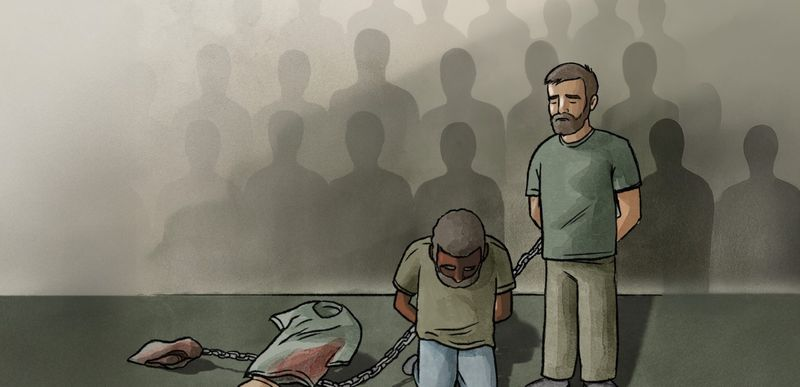

Nazrul Islam Abdul Basir and Sweety Akhtar left Bangladesh for Saudi Arabia in 2022, hoping for a better life. Both used to work as cleaners for a Saudi company called AL-Majal to support their families back home.
Suddenly on October 14 this year, the Saudi authorities executed them for committing an act of ‘fahisha’ or indecency inside a mosque in Makkah. According to a Saudi Interior Ministry , the punishment reflected the “seriousness and gravity” of the crime which it said violated the “sanctity of the time and place”.
However, The Daily Star has analysed 665 Saudi government press statements on executions from January 2024 to 20 October 2026 and found no other individuals—foreign or Saudi—were executed for fahisha during this period, making Nazrul and Sweety’s execution unusual.
Each dot represents 887 people Saudi Arabia executed over the past three years. Only China and Iran executed more. Rights groups believe the real number is even higher, due to a lack of transparency in Saudi’s official reporting.
Drug-related offences — which right groups stress fail to meet the international legal threshold of a “most serious crime”— accounted for more than half of the executions (53.78 pc) carried out.
Murder convictions were responsible for another 34 percent, sometimes coupled with other charges such as armed robbery and kidnapping.
Armed robbery, terrorism, rape, kidnapping, treason and “indecency” accounted for another 12 percent.
‘Indecency’ was added to the list on October 14, with the executions of Nazrul and Sweety. They appear to be the only people put to death for an “act of indecency” in the last three years.
Media reports reviewed by this newspaper also show that similar offences in Saudi Arabia received far lighter sentences for both Saudi and non-Saudi individuals. In a 2012 case, for instance, the court sentenced a 54-year-old Saudi national to four months in prison, 70 lashes and a pledge to never commit a crime. The man, according to reports, engaged in an indecent act with a 24-year-old woman inside a mosque in Madina called Masjid al-Nabawī.
In another notable case in 2015, a criminal court sentenced a non-Saudi national to four years in prison, followed by deportation and 1,000 lashes for sexual harassment of multiple women near Kaabah, the Muslim world’s most sacred site.
Duaa Dhainy, a researcher at Berlin-based European Saudi Organization for Human Rights (ESOHR), called the death penalty for such a non-violent act of indecency “deeply alarming”.
“The offence (for which Nazrul and Sweety were executed) falls far outside the threshold of the “most serious crimes” under international law, which is restricted to crimes involving intentional killing,” she told this newspaper on October 26.
Confusions over allegations
Nazrul and Sweety had been arrested and detained in separate prisons in Jeddah since August 2023, but over separate allegations. According to a confidential Bangladesh consular memo obtained by The Daily Star, Nazrul was accused of a ICT-related crime and Sweety of adultery.
But the memo did not establish any link between either of these separate allegations and the offence cited in the execution announcement. It remains unclear with whom Sweety committed an “act of indecency.”
Before leaving for Saudi Arabia, Nazrul posted these airport pictures on Facebook on 13 November 2022. “Good Bye Bangladesh,” he wrote, adding in Bangla: “I miss everyone so much. Please, all of you, pray for me.” Screenshot: Nazrul’s Facebook profile
However, some Saudi media reports said that Nazrul and Sweety had been accused of kissing in the mosque.
Questions have also been raised about whether defendants get a fair trial.
On October 19, The Daily Star reported that Nazrul’s family said Saudi authorities had executed him without informing them beforehand and without letting him defend himself.
“If my son was executed without just cause, I want justice,” said his father, Abdul Bashar.
Judge’s discretion
The Saudi Interior Ministry did not identify a specific statute under which Nazrul and Sweety were convicted, nor did they specify what the “indecent act” was.
The only information it gave to the Bangladesh authorities is that the duo was executed under taz’ir, a category of Islamic jurisprudence that leaves sentencing at the hands of judges.
Abdullahi Ahmed An-Na’im, a professor of law at Emory University in the US, told The Daily Star via email that Islamic law offers no basis for the death sentence handed to Nazrul and Sweety. He argued that punishment should not exceed the prescribed hadd/ hudud penalty for any offence, including Zina (unlawful sexual intercourse, outside the validity of marriage). For Zina, he said, that penalty is flogging, even when four witnesses have seen the act.
“How can so-called fahisha (indecent act) which does not qualify as zina be [punished] by death? This utter injustice is driven by the politics of Saudi Arabia in the name of Islam,” added this scholar of Islam and human rights.
According to Shariah or Islamic law, there are three major categories of crimes and punishment: hudud, qisas and taz’ir.
Unlike hudud (fixed scriptural penalties for specific offenses such as apostasy) or qisas (retaliatory justice for bodily injury and murder), punishments for taz’ir are not directly prescribed in the scripture (Quran/Sunnah) or bound by legal precedents.
They range from warnings, fines, and lashes to jail time, deportation, and the death penalty for crimes such as drug trafficking, harassment, “indecent acts”, fraud and terrorism, as well as conduct deemed harmful to society or public order.
Duaa Dhainy, the researcher at ESOHR, said the case of Nazrul and Sweety raised concerns about the broad discretion Saudi courts exercise, particularly for vulnerable migrants, who “may face language barriers, inadequate legal representation and limited consular support.”
For years, human rights groups have called on the Saudi government to put an end to taz’ir executions, as these are not explicitly mandated by Shariah.
Judges in Saudi Arabia have repeatedly used their discretionary powers (taz’ir) to increase the severity of punishments, including by imposing the death penalty, according to a 2025 Amnesty International report.
The right group also found that taz’ir was the basis for almost half of all (47.5 percent) of all reported executions between January 2014 and January 2025. The Daily Star’s analysis shows that taz’ir-based executions, particularly of non-Saudi nationals, have risen even more steeply over the past three years, with two-thirds capital punishment carried out under this category.
Each dot represents one person executed by Saudi authorities between January 2024 and October 2026 (887)
Of the 887 people executed, 64 percent were under taz’ir,
23 percent under qisas and 8 percent under hudud.
Now consider only the foreign nationals executed (439)
An overwhelming 85 percent of them were executed under taz’ir. Qisas and hudud accounted for the remaining 15 percent.
Saudi’s ‘war on drugs’
Nazrul and Sweety were executed at a time when Saudi Arabia was putting people to death at a pace not seen in decades. The Kingdom executed 356 people in 2025, highest since at least 1990. So far this year, as of October 20, Saudi Arabia has executed at least 186 people, according to an analysis of the Saudi Interior Ministry press statements.
Drug offenses (drug smuggling and trafficking) alone are responsible for nearly two-thirds (65%) of all executions in 2025 and 2026. According to Reprieve, a UK-based human rights organisation, nearly all of these offences are of non-violent nature.
The UN Working Group on Arbitrary Detention has also explicitly condemned executions for drug-related offences. It found that such executions violate international human rights law because drug-related offences do not meet the “most serious crimes” threshold for imposing the death penalty.
Despite mounting evidence — both in Saudi Arabia and beyond — suggesting that punitive and harsh measures fail to reduce drug use or trade, Saudi Arabia has long executed individuals for drug crimes. Such offenses accounted for around 30 percent of executions since 2014.
Executions in Saudi Arabia surge amid “War on drugs”
A 2020 moratorium on drug-related executions was lifted in November 2022, leading to a significant surge in executions since.
Drug-related offences (est. count)All other offences (est. count)
Source: Amnesty International (2014-2023) & The Daily Star’s Analysis (2024-26) · 2026 figures cover the period from Jan 1 to Oct 20, 2026.
Executions in Saudi Arabia by year, 2014 to 2026
Year
Executions
Drug-related offences (est. count)
All other offences (est. count)
2014
90
42
48
2015
158
63
95
2016
154
23
131
2017
146
58
88
2018
149
60
89
2019
184
85
99
2020
25
4
21
2021
65
0
65
2022
148
21
127
2023
172
2
170
2024
345
121
224
2025
356
240
116
2026
186
115
71
The recent dramatic surge, however, is unprecedented and stems from the Crown Prince Salman’s ‘war on drugs’ campaign. Declared in April 2023, the crackdown targeted mainly captagon, a cheap amphetamine-type stimulant produced largely in Syria and consumed more in Saudi Arabia than anywhere else in the world.
Amnesty International has called such a crackdown a “war on people” rather than “war on drugs”. Their impact, it says, “is often greatest on those who are poor, but also frequently overlaps with discrimination in law enforcement directed at vulnerable groups”.
This “war on drugs” came months after a policy shift in November 2022, when the Kingdom lifted an unofficial moratorium on drug-related executions that had been in place since 2020.
Killing foreign nationals
Saudi Arabia’s harsh crackdown on drugs is falling hardest on migrants, many of whom come from poorer, conflict-hit countries in Asia and Africa.
The Daily Star’s analysis shows that nearly 76 percent of those executed for drug offences over the past three years were foreign nationals.
Executed for drug offences
477
Total executed
362
Foreigners
115
Saudis
These 362 individuals came from 17 different countries. Pakistanis (63), Ethiopians (63), Somalis (45), Egyptians (38) and Jordanians (32) together made up two-thirds of all executed foreigners.
Reports from rights organisations reveal that most of those put to death for drug offenses are petty criminals and often, victims themselves of deception, trafficking and coercion.
Amnesty International has documented the case of seven Ethiopian and one Somali man, whom Saudi authorities executed in August 2025 for carrying hashish from Yemen into the kingdom. They had been put on death row in 2020. None had a lawyer during detention or trial.
According to court documents, the men had travelled to Yemen looking for work. There, Yemeni recruiters offered them 1,000 Saudi riyals (about $267) for every kilogram of hashish they carried into Saudi Arabia.
The men told the court they did not know who would receive the drugs and had no part in planning the trafficking.
The court convicted them of trafficking 153 kg of hashish. Using UN Office on Drugs and Crime figures on typical Saudi market prices, Amnesty estimated its value at $3.8 million. The recruiters, however, had promised the eight men a combined total of only $2,100, payable only after they delivered the drugs.
Traffickers also threaten migrants with violence and force them to carry drugs.
Take the case of Essam Ahmed, an Egyptian fisherman who had been held in Saudi Arabia since December 2021 for bringing a package of drugs (amphetamine, opium and heroine) into the country. He told his family that armed men forced him, at gunpoint, to carry it by sea.
He said so before the court, again and again — but to no avail.
Saudi authorities executed him on December 16, 2025.

Illustration: Amnesty International
Those who were executed
The 887 people named in Saudi Interior Ministry press statements, January 2024 – 20 October 2026. Each entry gives nationality, date, offence and punishment type, as stated in the statements.
Note: The names were transliterated from Arabic into English using Claude Opus 5.1, a large language model developed by Anthropic. Because AI transliteration can make mistakes, some spellings may differ from official records or from how the individuals’ families write their names.
Abeer bint Ali bin Zafir Al Mohammed al-OmariSaudi · 11 Feb 2024Murder, kidnapping, armed robbery, other · HududBayan bint Hafez bin Ali SiddiqSaudi · 11 Feb 2024Murder, kidnapping, armed robbery, other · HududAlima Fikadu TsegayeEthiopian · 15 Jul 2024Murder · QisasFausat Baljoun AbayomiNigerian · 3 Sep 2024Drug smuggling · Taz’irAisha Princess MohammedNigerian · 7 Oct 2024Drug smuggling · Taz’irShakirat Alaidi JiwaNigerian · 23 Nov 2024Drug smuggling · Taz’irWadhiha bint Abdullah bin Thunayan al-ShammariSaudi · 2 Dec 2024Murder · HududFenmilayo Omonmi BishiNigerian · 10 Dec 2024Drug smuggling · Taz’irJani Imba OkwambaKenyan · 25 Dec 2024Murder · QisasMaryam bint Mohammed bin Hamad al-MutaibSaudi · 21 May 2025Kidnapping, other · Taz’irRukayat Bukola LawalNigerian · 10 Aug 2025Drug smuggling · Taz’irSarah bint Dalmakh bin Abdulrahman al-ShamraniSaudi · 10 Aug 2025Murder · Taz’irHusn bint Mutaib bin Atiq al-TuhaymiSaudi · 7 Sep 2025Murder · Taz’irDebora Alofonki AmosanNigerian · 4 Nov 2025Drug smuggling · Taz’irYiabo Monirat AkimNigerian · 30 Aug 2026Drug smuggling · Taz’irFatima Tayoo FahmNigerian · 17 Sep 2026Drug smuggling · Taz’irFatima AbdullahNigerian · 30 Sep 2026Drug smuggling · Taz’irSweety AkhtarBangladeshi · 14 Oct 2026“Indecency” (fahisha) · Taz’irSahar bint Faisal bin Fayyad al-Hunaini al-HarbiSaudi · 18 Oct 2026Murder, other · Taz’irAbdulaziz bin Hudayb bin Tuhaymir al-MudhaybiriSaudi · 14 Jan 2024Murder · HududFaiz bin Zafir bin Mohammed al-Sa'di al-BishiSaudi · 18 Jan 2024Murder · QisasKhalid bin Mohammed bin Naji al-ShammariSaudi · 20 Jan 2024Murder · QisasSulaiman Zaid Salem ZuhairYemeni · Date not statedMurder · QisasIdris bin Abdullah bin Husn Al DahimSaudi · Date not statedMurder · QisasAbdulaziz bin Mohammed bin Saeed al-BayraqSaudi · 29 Jan 2024Murder · QisasAwn bin Hassan bin Radi Al Abu AbdullahSaudi · 30 Jan 2024Terrorism · Punishment not statedAli AbdullahEthiopian · 31 Jan 2024Murder, armed robbery, other · HududNaqs BarhaEthiopian · 31 Jan 2024Murder, armed robbery, other · HududShabir ShanbahEthiopian · 31 Jan 2024Murder, armed robbery, other · HududAftam HaqusEthiopian · 31 Jan 2024Murder, armed robbery, other · HududAbdulrahman bin Salem bin Hussein al-Humayli al-HarithiSaudi · 3 Feb 2024Murder · QisasHassan bin Thabit bin Uwaydah al-HazubarSaudi · 10 Feb 2024Terrorism · Punishment not statedMishaal bin Ali bin Mohammed WalbiSaudi · 11 Feb 2024Murder, kidnapping, armed robbery, other · HududIbrahim bin Abdullah bin Ali bin Sayyid al-MasawiSaudi · 11 Feb 2024Murder, kidnapping, armed robbery, other · HududSultan bin Mohammed bin Gharamah al-AsmariSaudi · 11 Feb 2024Murder, kidnapping, armed robbery, other · HududKhalid bin Ajran bin Ali al-SumaydiSaudi · 13 Feb 2024Murder · QisasMohammed bin Yahya bin Mohammed SirajSaudi · 14 Feb 2024Murder · QisasAbdulaziz bin Saleh bin Mohammed al-TuwaymSaudi · 15 Feb 2024Terrorism · Punishment not statedSami bin Saif bin Naji JizaniSaudi · 15 Feb 2024Terrorism · Punishment not statedAbdulrahman bin Abdullah bin Karamah al-SayariSaudi · 25 Feb 2024Murder · QisasAbdulaziz bin Mohammed bin Abdulaziz al-JuhaimiSaudi · 26 Feb 2024Murder · QisasAhmed bin Saud bin Sagheer al-Shammarinot stated (implied Saudi) · 27 Feb 2024Treason, terrorism · Punishment not statedSaeed bin Ali bin Saeed al-Wadeinot stated (implied Saudi) · 27 Feb 2024Treason, terrorism · Punishment not statedAbdulaziz bin Obaid bin Abdullah al-Shahraninot stated (implied Saudi) · 27 Feb 2024Treason, terrorism · Punishment not statedAwad bin Mushabbab bin Saeed al-Asmarinot stated (implied Saudi) · 27 Feb 2024Treason, terrorism · Punishment not statedAbdullah bin Hamad bin Majwal al-Saidinot stated (implied Saudi) · 27 Feb 2024Treason, terrorism · Punishment not statedMohammed bin Haddad bin Ahmed bin Mohammednot stated (implied Saudi) · 27 Feb 2024Treason, terrorism · Punishment not statedAbdullah bin Hajis bin Ghazi al-Shammarinot stated (implied Saudi) · 27 Feb 2024Treason, terrorism · Punishment not statedHassan Salem FutayniYemeni · 28 Feb 2024Murder, other · HududIbrahim Yahya AliYemeni · 28 Feb 2024Murder, other · HududAbdullah Ali DarwishYemeni · 28 Feb 2024Murder, other · HududAbdullah Hassan MajariYemeni · 28 Feb 2024Murder, other · HududHamoud Masoud ShueiYemeni · 28 Feb 2024Murder, other · HududAbdullah bin Saleh bin Ayed al-Dhiyabi al-RashidiSaudi · 2 Mar 2024Murder · QisasFahd bin Shalwan bin Hijab al-Sawdah al-Subai'iSaudi · 3 Mar 2024Murder · QisasArshad Ali Dibar Mohammed IsmailPakistani · 5 Mar 2024Murder, other · HududAbdulmajid Haji Nur al-DinPakistani · 5 Mar 2024Murder, other · HududKhalid Hussein Batujo Qurban AliPakistani · 5 Mar 2024Murder, other · Taz’irAbdulghaffar Mir Bahr LutfullahPakistani · 5 Mar 2024Murder, other · Taz’irAbdulghaffar Mohammed SumahPakistani · 5 Mar 2024Murder, other · HududBasil bin Suhail bin Suhu al-OtaibiSaudi · 17 Apr 2024Murder · QisasAbdullah bin Muqbil bin Awad al-SayariSaudi · 20 Apr 2024Murder · QisasBothithiyaqi Hindi Singhtschu AndraratanSri Lankan · 21 Apr 2024Murder · QisasAbdulrahman bin Sayer bin Abdullah al-ShammariSaudi · 22 Apr 2024Treason, terrorism · Punishment not statedHamid bin Faiz bin Hamid al-Kubairi al-GhamdiSaudi · 22 Apr 2024Murder · QisasMohammed bin Madallah bin al-Jameel al-RuwailiSaudi · 23 Apr 2024Murder · QisasNauman bin Afat bin Mudhhi al-DhafiriSaudi · 27 Apr 2024Treason, terrorism · Punishment not statedHussein bin Nasser bin Mahdi al-QahtaniSaudi · 27 Apr 2024Murder · QisasAbdulsalam Ahmed Mahdi ShaddadYemeni · 24 Apr 2024Murder · QisasMohammed bin Enad bin Mushatil al-Fraiji al-RuwailiSaudi · Date not statedMurder · QisasSaud bin Mohammed bin Hamad al-QahtaniSaudi · Date not statedMurder · QisasYasser bin Nazzal bin Atiq al-RuwailiSaudi · 30 Apr 2024Murder · QisasHussein bin Maazir bin Huwail al-Qaiqai al-RuwailiSaudi · 1 May 2024Murder · QisasAbdullah bin Abdrabbuh al-ZahraniSaudi · 2 May 2024Treason, terrorism · Punishment not statedYahya bin Ali bin Hassan HazzaziSaudi · 2 May 2024Treason, terrorism · Punishment not statedAbdulaziz bin Abdullah bin Yusuf al-Hazri al-GhamdiSaudi · 4 May 2024Murder · QisasIbrahim bin Salah bin Rabie al-Husaynat al-LihyaniSaudi · 5 May 2024Murder · QisasSaleh bin Madhi bin Nasser al-Subai'iSaudi · 8 May 2024Rape, other · Taz’irJamaluddin Khan Tahir KhanIndian · 9 May 2024Murder · QisasImad Mahmoud HusseinSyrian · 11 May 2024Drug smuggling · Taz’irMustafa Mahmoud HusseinSyrian · 11 May 2024Drug smuggling · Taz’irAbdulrahman bin Naif bin Mohammed al-Jubairan al-As'adiSaudi · 12 May 2024Murder · HududHassan bin Ahmed bin Mansour Al NasserSaudi · 13 May 2024Terrorism · Punishment not statedHaroon Kamal Mohammed Kamal KhanPakistani · 15 May 2024Murder · QisasYusuf bin Ali bin Matar al-Omari al-ZahraniSaudi · 19 May 2024Murder · QisasMohammed bin Nabil bin Mohammed Al JoharSaudi · 21 May 2024Terrorism · Punishment not statedDheeb bin Saeed bin Mohammed al-QahtaniSaudi · 21 May 2024Murder · QisasBandar bin Mohammed bin Nasser Al Saad al-QahtaniSaudi · 22 May 2024Murder · QisasAbdulaziz bin Mohammed bin Ali JaafarSaudi · 27 May 2024Murder · QisasMuwaffaq bin Saleh bin Sunaid al-HarbiSaudi · 28 May 2024Terrorism, murder · Punishment not statedAli bin Nasser bin Ali al-Dhahran al-SahliSaudi · 30 May 2024Murder · QisasAdel bin Muawwad bin Awdah al-Fayedi al-JuhaniSaudi · 1 Jun 2024Murder · QisasModou al-Haji KiyariNigerian · 2 Jun 2024Drug smuggling · Taz’irMujtaba bin Mohammed bin Yusuf Al SamaeelSaudi · 3 Jun 2024Terrorism · Punishment not statedMohammed bin Awad bin Ali al-ShamraniSaudi · 4 Jun 2024Murder · QisasShuja bin Thabit bin Mitrak al-Mas'ari al-DawsariSaudi · 10 Jun 2024Murder · QisasSaleh bin Nasser bin Yahya ShuwayhiSaudi · 10 Jun 2024Murder · QisasOmar bin Abdullah bin Mulayh al-Saqri al-AnaziSaudi · 11 Jun 2024Murder · QisasYasser bin Marzouq bin Khunayfis al-DhubyaniSaudi · 22 Jun 2024Murder · QisasMohammed bin Yahya bin Ahmed AwajiSaudi · 23 Jun 2024Murder · QisasAbdullah bin Ali bin Mohammed al-MuhayshiSaudi · 24 Jun 2024Terrorism · HududMohammed bin Ahmed bin Mohammed Al Sayyid al-BariqiSaudi · 25 Jun 2024Murder · QisasNaif bin Hassan bin Ayed al-Aslami al-ShammariSaudi · 29 Jun 2024Murder · QisasMohammed bin As'ad bin Ahmed al-ShakhouriSaudi · 30 Jun 2024Terrorism · Taz’irNaif bin Badah bin Saad al-Faraeneh al-SubaieSaudi · 2 Jul 2024Murder · QisasAbdulrahman Ahmed Ali al-HabjiYemeni · 4 Jul 2024Murder · QisasMansour bin Ghannam bin Muqaym al-Zaqrout Al BuraikSaudi · 6 Jul 2024Murder · QisasFaisal bin Mahous bin Zayed al-HarthiSaudi · 9 Jul 2024Murder · HududNaif bin Tarish bin Ahmed al-MujadiaSaudi · 9 Jul 2024Murder · QisasHazem Mohsen Taha al-KousaSyrian · 10 Jul 2024Drug smuggling · Taz’irMuqrin bin Sulaiman bin Suhab al-Otaibinot stated (implied Saudi) · 10 Jul 2024Murder · QisasFayez bin Mohammed bin Abdullah al-OmariSaudi · 10 Jul 2024Murder · QisasMohammed bin Saeed bin Jawad Al AteeqSaudi · 11 Jul 2024Terrorism, other · Taz’irSuleiman Raheel Mashih al-DamaniyahJordanian · 13 Jul 2024Drug smuggling · Taz’irMaytham bin Mohammed bin Abdullah Al ObaidSaudi · 13 Jul 2024Murder · QisasMarzouq bin Ibrahim bin Mohammed al-QaddahSaudi · 14 Jul 2024Murder · QisasAli Adam Saeed MohammedSudanese · 15 Jul 2024Drug smuggling · Taz’irKitab Gul Sar QarashPakistani · 16 Jul 2024Drug smuggling · Taz’irMardi bin Fuhaid bin Mardi al-JamainSaudi · 16 Jul 2024Murder · QisasMohammed bin Abdullah bin Ali al-Abdul JabbarSaudi · 17 Jul 2024Terrorism · Taz’irAmmar bin Ahmed bin Mohammed al-KhalidiSaudi · 18 Jul 2024Drug smuggling · Taz’irShafiullah Shah ZamanPakistani · 18 Jul 2024Drug smuggling · Taz’irSalah Abdu Ahmed SaeedYemeni · 20 Jul 2024Murder · QisasIzzat Ahmed al-SaadiSyrian · 20 Jul 2024Drug smuggling · Taz’irAziz Floro Nshu OmarNigerian · 21 Jul 2024Drug smuggling · Taz’irAdnan Hussein al-SuleimanSyrian · 22 Jul 2024Drug smuggling · Taz’irSaeed bin Mubarak bin Saeed Al GhaibSaudi · 22 Jul 2024Murder · QisasAhmed bin Hassan bin Ali Al IssaSaudi · 23 Jul 2024Terrorism, murder · Taz’irMohammed bin Aziz bin Salama al-HuwaitiSaudi · 24 Jul 2024Drug smuggling · Taz’irAbdulilah bin Sulaiman bin Mohammed al-SaifSaudi · 24 Jul 2024Murder · QisasMisbah al-Saudi Misbah ImamEgyptian · 25 Jul 2024Drug trafficking · Taz’irMohammed bin Yahya bin Bakhit al-AklabiSaudi · 27 Jul 2024Murder · QisasAbdullah bin Hamdan bin Sanad al-RuwailiSaudi · 27 Jul 2024Drug smuggling · Taz’irRaad Mohammed Mahmoud al-SabahJordanian · 28 Jul 2024Drug smuggling · Taz’irZubair Khan Hazrat JamalPakistani · 29 Jul 2024Drug smuggling · Taz’irAbdulrahman bin As'ad bin Yazid al-Madari al-FaifiSaudi · 30 Jul 2024Murder · QisasAbu Bakr Saleh MohammedNigerian · 31 Jul 2024Drug smuggling · Taz’irJaafar bin Sadiq bin Khamis al-HajjiSaudi · 31 Jul 2024Armed robbery, kidnapping, murder · HududHussein bin Baqer bin Hussein al-AwadSaudi · 31 Jul 2024Armed robbery, kidnapping, murder · HududIdris bin Hussein bin Ahmed al-SamaeelSaudi · 31 Jul 2024Armed robbery, kidnapping, murder · HududHussein bin Abdullah bin Hajji al-MuslimiSaudi · 31 Jul 2024Armed robbery, kidnapping, murder · HududNaisam Naisam Chinikaburat SiddiquiIndian · 31 Jul 2024Armed robbery, kidnapping, murder · HududKhaled Ibrahim al-MashhourSyrian · 1 Aug 2024Drug smuggling · Taz’irZafer bin Ghaleb bin Yahya Al Masoud al-QahtaniSaudi · 1 Aug 2024Murder · QisasTaher bin Ahmed bin Ali HaddadiSaudi · 4 Aug 2024Drug trafficking · Taz’irRashid bin Abdullah bin Rashid al-DawsariSaudi · 4 Aug 2024Murder · QisasSaeed Khan Sarfaraz KarimPakistani · 5 Aug 2024Drug smuggling · Taz’irAbdullah Mohammed AbdullahSudanese · 5 Aug 2024Murder · QisasSultan bin Sumaihan bin Ali al-AtawiSaudi · 6 Aug 2024Drug smuggling · Taz’irMaher bin Khaled bin Mohammed al-Baghouli al-OmariSaudi · 6 Aug 2024Murder · QisasMustafa Mahmoud Abdulfattah AbdulhafezEgyptian · 7 Aug 2024Murder · QisasHassan Musa YusufNigerian · 7 Aug 2024Drug smuggling · Taz’irFahd bin Ali bin Tale al-ShehriSaudi · 8 Aug 2024Murder · QisasAbdullah bin Mohammed bin Rashid al-QunayanSaudi · 10 Aug 2024Terrorism, treason · Punishment not statedMiki QarmayEthiopian · 11 Aug 2024Murder · QisasMajdi bin Malik bin Hussein al-Zaidi al-SharifSaudi · 12 Aug 2024Murder · QisasWalid Farouk Abdu AbdulbaqiEgyptian · 13 Aug 2024Drug smuggling · Taz’irYousef Kulaib Ghalib KhudairEgyptian · 13 Aug 2024Drug smuggling · Taz’irSaud bin Ayed bin Jardan al-Sandali al-SubaieSaudi · 13 Aug 2024Murder · QisasKhalaf Hassan Hussein al-FraihatJordanian · 14 Aug 2024Drug smuggling · Taz’irFawzi Abu Aqila Ahmed al-HasanSudanese · 14 Aug 2024Murder · QisasAbdulmajeed bin Hassan bin Abdullah Al NimrSaudi · 17 Aug 2024Terrorism, treason · Punishment not statedAdam Ibrahim MusaNigerian · 18 Aug 2024Drug smuggling · Taz’irMusa bin Idris bin Musa ShuwaihiSaudi · 19 Aug 2024Murder · QisasMohammed Adam MohammedNigerian · 20 Aug 2024Drug smuggling · Taz’irMohammed bin Mansour bin Mohammed al-WaqdaniSaudi · 20 Aug 2024Murder · QisasTalal bin Fahis bin Ayada al-Dahmashi al-AnaziSaudi · 20 Aug 2024Murder · QisasNader bin Farhan bin Khamis al-MudhinSaudi · 21 Aug 2024Drug smuggling · Taz’irAhmed bin Mudhian bin Malaqi al-Mufaddali al-ShammariSaudi · 21 Aug 2024Murder · QisasAbdullah bin Hamoud bin Mutawa al-ShammariSaudi · 22 Aug 2024Drug smuggling · Taz’irZafer bin Mohammed bin Abdullah al-ShehriSaudi · 24 Aug 2024Terrorism, treason · Punishment not statedAhmed Sheikh Awad BamaabadYemeni · 25 Aug 2024Drug smuggling · Taz’irSalem bin Saeed bin Masoud al-RubaieSaudi · 26 Aug 2024Murder · QisasAli bin Nasser bin Ali al-MurriSaudi · 26 Aug 2024Drug smuggling · Taz’irHamad bin Saeed bin Salem al-MurriSaudi · 26 Aug 2024Drug smuggling · Taz’irAbdullah bin Ali bin Hassan al-SaihatiSaudi · 26 Aug 2024Murder · QisasMubarak bin Hajid bin Buti Al Dawas al-DosariSaudi · 27 Aug 2024Murder · QisasFahad bin Ahmed bin Mutlaq al-AnaziSaudi · 27 Aug 2024Drug smuggling · Taz’irHilal Hamada al-SalamaSyrian · 28 Aug 2024Drug smuggling · Taz’irAbdulrahman bin Mohammed bin Hamza YunusSaudi · 28 Aug 2024Murder · QisasEid bin Rashid bin Mohammed al-OmairiSaudi · 29 Aug 2024Drug smuggling · Taz’irShiromba Abdulqader AbdulrahmanIndian · 29 Aug 2024Murder · QisasAbdulqayyum ShinwariAfghan · 31 Aug 2024Drug smuggling · Taz’irAbdullah bin Ali bin Sharei al-ShehriSaudi · 1 Sep 2024Terrorism, treason · Punishment not statedAli Akbar Noor AhmedPakistani · 3 Sep 2024Murder · QisasJan Mohammed Wali MohammedAfghan · 5 Sep 2024Drug smuggling · Taz’irAbdullah bin Salem bin Mabkhout al-SaiariSaudi · 5 Sep 2024Murder · QisasSher Mohammed Hazrat HusseinPakistani · 7 Sep 2024Drug smuggling · Taz’irFahad bin Mohammed bin Haraz al-OtaibiSaudi · 7 Sep 2024Murder · QisasTalal bin Ali bin Khunaifis al-HudhaliSaudi · 8 Sep 2024Terrorism, treason · Punishment not statedMajdi bin Mohammed bin Atiyan al-KaabiSaudi · 8 Sep 2024Terrorism, treason · Punishment not statedRaed bin Amer bin Matar al-KaabiSaudi · 8 Sep 2024Terrorism, treason · Punishment not statedFazal KarimPakistani · 8 Sep 2024Drug smuggling · Taz’irTalal bin Mutlaq bin Awad al-Sulaimi al-AtawiSaudi · 8 Sep 2024Murder · QisasAli Mohammed Abu BakrNigerian · 10 Sep 2024Drug smuggling · Taz’irMohammed bin Sayel bin Battal al-ThubaitiSaudi · 10 Sep 2024Murder · QisasKalla Khan ShinwariAfghan · 12 Sep 2024Drug smuggling · Taz’irMahmoud bin Suwailem bin Sarii al-Ubaiwani al-HuwaitiSaudi · 12 Sep 2024Murder · QisasSaqr Salem Abd Rabbo al-AyashiYemeni · 14 Sep 2024Drug smuggling, drug trafficking · Taz’irMohammed Ali Ahmed SarhanYemeni · 14 Sep 2024Drug smuggling, drug trafficking · Taz’irMishal bin Suleiman bin Hassan al-GhannamSaudi · 15 Sep 2024Terrorism, treason · Punishment not statedTalal bin Salman bin Hamdan al-OmairiSaudi · 16 Sep 2024Drug trafficking · Taz’irBadr bin Salem bin Mubarak al-OmairiSaudi · 16 Sep 2024Drug trafficking · Taz’irSaeed bin Ali bin Mushabbab MutlaqSaudi · 16 Sep 2024Murder · QisasAli bin Hamid bin Mohammed Al Aitha al-AwfiSaudi · 17 Sep 2024Murder · QisasMohammed Ihsan Juya Mumtaz MohammedPakistani · 17 Sep 2024Drug smuggling · Taz’irIbrahim bin Abdulaziz bin Abdullah KhanbashiSaudi · 25 Sep 2024Murder · Taz’irAbdullah Adam Yousef al-YamouEthiopian · 25 Sep 2024Drug smuggling · Taz’irMohammed Ahmed Shagab AhmedEthiopian · 25 Sep 2024Drug smuggling · Taz’irHazza bin Mohammed bin Sultan al-Khanafer al-QahtaniSaudi · 26 Sep 2024Murder · QisasHani Abu al-Qasim Mohsen MohammedEgyptian · 28 Sep 2024Drug smuggling · Taz’irSuleiman Obaidullah HamidEgyptian · 28 Sep 2024Drug smuggling · Taz’irAhmed bin Saleh bin Ali Al HassanSaudi · 28 Sep 2024Murder · QisasNadeem Shahzad AbdulrahmanPakistani · 29 Sep 2024Drug smuggling · Taz’irSami Sabri AnfousSyrian · 30 Sep 2024Drug smuggling · Taz’irDashin bin Hassan bin Salem Al LajzamSaudi · 30 Sep 2024Murder · QisasAli bin Saad bin Jaari Al Afran al-SuhaimiSaudi · 1 Oct 2024Murder · QisasMohammed Yasin Rahim ShahPakistani · 1 Oct 2024Drug smuggling · Taz’irAhmed bin Abdullah bin Ahmed Al Jaber al-HarbiSaudi · 2 Oct 2024Murder · QisasWazir Bat Khan Noor Bad ShahPakistani · 3 Oct 2024Drug smuggling · Taz’irAhmed bin Fuhaid bin Salem al-Thunayan al-ShammariSaudi · 3 Oct 2024Murder · QisasSajjad Rahman Syed AliPakistani · 5 Oct 2024Drug smuggling · Taz’irAriel Bayoni NakitaFilipino · 5 Oct 2024Murder · QisasMustafa Mohammed KiyariNigerian · 6 Oct 2024Drug smuggling · Taz’irAbdulaziz bin Ahmed bin Sulaiman KaabiSaudi · 6 Oct 2024Murder · QisasHussein bin Ahmed bin Hussein HarubiSaudi · 7 Oct 2024Murder · QisasMohammed bin Hussein bin Ahmed ShubailiSaudi · 8 Oct 2024Murder · QisasNasser Nasser Murshid MahboubYemeni · 9 Oct 2024Murder · HududAbdulaziz bin Ali bin Dallak QusadiSaudi · 10 Oct 2024Drug smuggling · Taz’irMurad bin Abdulkarim bin Mutair al-Shurayhi al-ShammariSaudi · 12 Oct 2024Murder · QisasAyed bin Salem bin Ali al-ShawatiSaudi · 13 Oct 2024Murder · QisasMohammed Khaled al-ZoubiSyrian · 14 Oct 2024Drug smuggling · Taz’irAdel Younis al-NassarSyrian · 14 Oct 2024Drug smuggling · Taz’irHassan Mohammed Khairy Misbah TahboubJordanian · 16 Oct 2024Drug smuggling · Taz’irAbdulrahman bin Zayed bin Mohammed al-SoudiSaudi · 16 Oct 2024Murder · QisasGhassan Ali MadawiSyrian · 17 Oct 2024Drug smuggling · Taz’irKabal Jan Lal BadshahPakistani · 19 Oct 2024Drug smuggling · Taz’irYahya bin Mohammed bin Yahya al-ShubailiSaudi · 19 Oct 2024Murder · QisasSyed Tajammul HussainPakistani · 20 Oct 2024Drug smuggling · Taz’irAwad bin Suwaid bin Fadhil al-Kuwaykibi al-RuwailiSaudi · 20 Oct 2024Murder · QisasSuwailem bin Abdullah bin Salem al-OmariSaudi · 20 Oct 2024Murder · QisasKhalid bin Mohammed bin Tali al-ShahriSaudi · 21 Oct 2024Terrorism, treason, murder · Punishment not statedOmar bin Zafer bin Ali al-ShahriSaudi · 21 Oct 2024Terrorism, treason, murder · Punishment not statedYahya Mohammed Yahya LutfallahYemeni · 22 Oct 2024Drug smuggling · Taz’irAli Abdullah Ahmed AzeebYemeni · 22 Oct 2024Drug smuggling · Taz’irAhmed Yahya Masoud AliYemeni · 22 Oct 2024Drug smuggling · Taz’irSalem Ibrahim NahariYemeni · 22 Oct 2024Drug smuggling · Taz’irSaud bin Dhib bin Ghazi al-Murshidi al-OtaibiSaudi · 22 Oct 2024Murder · QisasLali Khan Mohammed YaqoobPakistani · 23 Oct 2024Drug smuggling · Taz’irJubran bin Mohammed bin Abdullah Al Salem al-QahtaniSaudi · 23 Oct 2024Murder · QisasHassan Eid Suleiman al-MughbishEgyptian · 24 Oct 2024Drug smuggling · Taz’irMusa Mohammed Hassan DabalEgyptian · 24 Oct 2024Drug smuggling · Taz’irSuwailem bin Muslim bin Awdah al-FayidiSaudi · 24 Oct 2024Murder · QisasSahl bin Mutab bin Rabih al-SahliSaudi · 26 Oct 2024Murder · QisasMohammed Tawfiq Salim ArafaJordanian · 26 Oct 2024Drug smuggling · Taz’irTurki bin Mohammed bin Ahmed al-AliSaudi · 27 Oct 2024Drug smuggling · Taz’irAbdulmohsen bin Masoud bin Hayson al-HarithiSaudi · 28 Oct 2024Murder · QisasSaleh bin Umair bin Aqeel al-ShammariSaudi · 29 Oct 2024Drug smuggling · Taz’irNajash Abdulqader Khayar AbduEritrean · 29 Oct 2024Murder · QisasMohammed Ismail Dhabab NahhasSyrian · 30 Oct 2024Drug smuggling · Taz’irAbdulrazzaq Mahmoud al-MahmoudSyrian · 30 Oct 2024Drug smuggling · Taz’irSaleh bin Yahya bin Abdulkarim al-AliSaudi · 30 Oct 2024Murder · QisasSultan bin Mohammed bin Kumaikh al-OtaibiSaudi · 31 Oct 2024Terrorism, treason · Punishment not statedTurki bin Mohammed bin Ushaish al-HazmiSaudi · 31 Oct 2024Terrorism, treason · Punishment not statedAhmed Mohammed Ali Qashwi Al SalamaYemeni · 2 Nov 2024Drug smuggling · Taz’irYahya Saleh Hussein al-WayiliYemeni · 2 Nov 2024Drug smuggling · Taz’irHadi bin Salem bin Ali al-Muhamid al-YamiSaudi · 2 Nov 2024Drug smuggling · Taz’irSalem bin Rukhaym bin Saleh Al Mansour al-YamiSaudi · 2 Nov 2024Drug smuggling · Taz’irAli bin Hadi bin Salem bin Saleh Al QaradSaudi · 2 Nov 2024Drug smuggling · Taz’irAbdullah bin Ahmed bin Ibrahim ShariahSaudi · 2 Nov 2024Drug smuggling · Taz’irAli bin Abdulhadi bin Ali Al Maarouf al-SayariSaudi · 2 Nov 2024Murder · QisasFaisal bin Abath bin Abdullah al-Kharras al-OtaibiSaudi · 3 Nov 2024Murder · QisasMufid Asaad Mohammed HamdouniJordanian · 4 Nov 2024Drug smuggling · Taz’irAli bin Mohammed bin Abdulrahman Al Marai al-QarniSaudi · 4 Nov 2024Murder · QisasRafie Abd al-SalamSyrian · 5 Nov 2024Drug smuggling · Taz’irNasser Ali Mohammed AhmedEgyptian · 6 Nov 2024Murder · QisasSaad bin Bashir al-RuwailiSaudi · 7 Nov 2024Terrorism · Taz’irSaad bin Musnad al-RuwailiSaudi · 7 Nov 2024Terrorism · Taz’irNayel bin Dhabil al-RuwailiSaudi · 7 Nov 2024Terrorism · Taz’irAnwar Mohammed KhanPakistani · 9 Nov 2024Drug smuggling · Taz’irBashir bin Mohammed bin Faraj Ghaithi al-ShammariSaudi · 10 Nov 2024Murder · QisasFaisal bin Misfer bin Faisal Al MasoudSaudi · 11 Nov 2024Drug smuggling · Taz’irMoayyad bin Suleiman bin Mohammed al-ShuwaimanSaudi · 11 Nov 2024Drug smuggling · Taz’irMohammed Zeidan Sahman al-NawasraJordanian · 12 Nov 2024Drug smuggling · Taz’irSaad Mulaihan Hulail al-NawasraJordanian · 12 Nov 2024Drug smuggling · Taz’irAli bin Abdullah bin Saleh al-SayariSaudi · 14 Nov 2024Terrorism, treason, murder · Punishment not statedAbdulaziz bin Ahmed bin Musleh al-OmariSaudi · 14 Nov 2024Terrorism, treason, murder · Punishment not statedMusa Mohammed Abdullah SalehYemeni · 16 Nov 2024Drug smuggling · Taz’irKarim bin Sulaiman bin Ajjaj al-Khamali al-AnaziSaudi · 16 Nov 2024Murder · QisasSabah Salman Sumaihan al-HuwaitatJordanian · 18 Nov 2024Drug smuggling · Taz’irHassan Hammoud Ali al-ZawaidehJordanian · 18 Nov 2024Drug smuggling · Taz’irAhmad bin Suntayan bin Hamad al-Rashoud al-NawmasiSaudi · 18 Nov 2024Rape, other · HududMohammed bin Qadi bin Salem al-AnaziSaudi · 18 Nov 2024Murder · QisasZayd bin Mansour bin Falah al-Sa'diSaudi · 19 Nov 2024Murder, other · Taz’irHazza' bin Barak bin Mubarak al-Sa'idi al-HarbiSaudi · 19 Nov 2024Drug trafficking · Taz’irNasser Hammoud al-ZaydSyrian · 20 Nov 2024Drug smuggling · Taz’irAli bin Saleh bin Mubarak al-Sa'iriSaudi · 21 Nov 2024Terrorism, armed robbery · Taz’irSaleh Marei Mubarak al-Sa'iriYemeni · 21 Nov 2024Terrorism, armed robbery · Taz’irMutaib Omar Mohammed al-Sa'iriYemeni · 21 Nov 2024Terrorism, armed robbery · Taz’irAbdullah bin Mohammed bin Abdullah al-ShahriSaudi · 23 Nov 2024Sexual assault · Taz’irAhmad bin Mohammed bin Mahmoud al-SumaliSaudi · 24 Nov 2024Murder · Taz’irAbdullah bin Mohammed bin Zafir al-Sa'diSaudi · 25 Nov 2024Murder · QisasWalid Taher Mahmoud BishnaqEgyptian · 26 Nov 2024Murder · HududFawaz bin Obaid bin Hammoud al-Nufai'i al-OtaibiSaudi · 26 Nov 2024Drug smuggling · Taz’irEl-Sayed Abdulaziz Abdulhadi IsmailEgyptian · 27 Nov 2024Drug smuggling · Taz’irMohammed Shakil MiaBangladeshi · 27 Nov 2024Murder, other · HududHakeem Babatunde AdelekeNigerian · 28 Nov 2024Drug smuggling · Taz’irAseel Ali Ahmed JaberYemeni · 28 Nov 2024Murder · QisasMohammed bin Zafir bin Thamer al-OmariSaudi · 30 Nov 2024Treason, terrorism · Punishment not statedAbdullah bin Khidr bin Abdullah al-GhamdiSaudi · 30 Nov 2024Treason, terrorism · Punishment not statedIbrahim bin Abdullah bin Ibrahim al-AwadSaudi · 1 Dec 2024Murder · QisasSalem bin Salman bin Eid al-AtawiSaudi · 2 Dec 2024Drug smuggling · Taz’irTamer Farag Sanousi MisbahEgyptian · 3 Dec 2024Drug smuggling, drug trafficking · Taz’irAhmed Ali Younes QaidEgyptian · 3 Dec 2024Drug smuggling, drug trafficking · Taz’irIslam Mohammed Ahmed al-SayedEgyptian · 3 Dec 2024Drug smuggling, drug trafficking · Taz’irKamal bin Kamel bin Mohammed MoawadSaudi · 3 Dec 2024Murder · QisasAkhtar Munir ZahirPakistani · 5 Dec 2024Drug smuggling · Taz’irAhmed Atiyah Mas'ad FaragEgyptian · 5 Dec 2024Murder · QisasDakhil bin Fuhaid bin Salem al-Hasna al-MuriSaudi · 7 Dec 2024Murder · Taz’irMohammed Eid Mahmoud al-AzazmehJordanian · 8 Dec 2024Drug smuggling · Taz’irFaisal bin Misfer bin Ghanem al-SufyaniSaudi · 8 Dec 2024Murder · Taz’irAbdullah bin Ali bin Jarwan al-QahtaniSaudi · 9 Dec 2024Murder · QisasHani Ratib Hamed RatibEgyptian · Date not statedDrug smuggling · Taz’irSaleh bin Abdulhadi bin Mohammed Al Baraz al-DosariSaudi · Date not statedMurder · QisasMohammed bin Abdullah bin Hammad Al HammadSaudi · Date not statedMurder · QisasMuhannad bin Zuhair bin Ali al-MullaSaudi · Date not statedMurder · QisasBassam Abdulrahman Ali al-FaqihYemeni · Date not statedMurder · QisasSultan bin Salem bin Ayed al-RuwailiSaudi · 14 Dec 2024Drug trafficking · Taz’irAbdullah bin Zafir bin Abdullah al-Qarbi al-ShahraniSaudi · 15 Dec 2024Murder · QisasJawwal Sulaiman Matar al-SharafatJordanian · 16 Dec 2024Drug smuggling · Taz’irIbrahim bin Musa bin Ahmed Naji'iSaudi · 16 Dec 2024Murder · QisasAkeem Ola Sonkami LawalNigerian · 17 Dec 2024Drug smuggling · Taz’irMohammed bin Saud bin Omar al-Zahyan al-ShahraniSaudi · 18 Dec 2024Murder · QisasMaisri Khan Khan NawabPakistani · 19 Dec 2024Drug smuggling · Taz’irSafat Lola Anwar ShahPakistani · 19 Dec 2024Murder · HududMahmoud Abdullah HajijJordanian · Date not statedDrug smuggling · Taz’irNajeh Mishhin BakhitJordanian · Date not statedDrug smuggling · Taz’irSulaiman Eid SulaimanJordanian · Date not statedDrug smuggling · Taz’irAttallah Ali Dughaiman SalemJordanian · Date not statedDrug smuggling · Taz’irAhmed bin Saleh bin Abdullah al-Ka'ibiSaudi · 22 Dec 2024Treason, terrorism · Punishment not statedAyed bin Hayel bin Hindi al-AnaziSaudi · 22 Dec 2024Treason, terrorism · Punishment not statedSalman bin Sultan bin Awda al-BuhairanSaudi · 23 Dec 2024Drug smuggling · Taz’irOmar Haitham ManduSyrian · 24 Dec 2024Drug smuggling · Taz’irYousef Ali Ahmed AlwaniYemeni · 24 Dec 2024Kidnapping, rape, armed robbery, other · HududSulaiman Ali Mohammed AbdullahYemeni · 24 Dec 2024Kidnapping, rape, armed robbery, other · HududMohammed bin Shaman bin Darbi al-AnaziSaudi · 25 Dec 2024Drug smuggling · Taz’irAbdulrahman bin Shabab bin Ali al-OtaibiSaudi · 26 Dec 2024Treason, terrorism · Punishment not statedMajid bin Abdulhamid bin Abdulkarim al-DihanSaudi · 26 Dec 2024Treason, terrorism · Punishment not statedBadr bin Muha'a bin Mohammed Maqdhabi MajrashiSaudi · 28 Dec 2024Kidnapping, rape · HududAli bin Fahd bin Abdullah al-QahtaniSaudi · 29 Dec 2024Drug trafficking · Taz’irAli bin Issa bin Ali AsiriSaudi · 29 Dec 2024Murder · HududKhalid Ahmed Mahmoud al-NajjarJordanian · 30 Dec 2024Drug smuggling · Taz’irMubarak bin Mani bin Mohammed Al Mohammed al-DosariSaudi · 30 Dec 2024Murder · QisasAhmed Fouad al-Sayyid al-LuwaiziEgyptian · 31 Dec 2024Murder, armed robbery · HududNasser bin Sawi bin Ghafil al-RuwailiSaudi · 31 Dec 2024Drug smuggling · Taz’irJasim Mohammed ShaabaniIranian · Date not statedDrug smuggling · Taz’irAbdulreza Yunus TangasiriIranian · Date not statedDrug smuggling · Taz’irKhalil Shahid SameriIranian · Date not statedDrug smuggling · Taz’irMohammed Jawad AbduljalilIranian · Date not statedDrug smuggling · Taz’irMahdi Kanaan GhanemiIranian · Date not statedDrug smuggling · Taz’irHurr Mohammed ShaabaniIranian · Date not statedDrug smuggling · Taz’irDhaib bin Jubran bin Manahi Al SawdaSaudi · 1 Jan 2025Murder · QisasHussein Sayed Ahmed AbdulbaqiEgyptian · 2 Jan 2025Drug smuggling · Taz’irJibril bin Abdu bin Ali HaqawiSaudi · 4 Jan 2025Murder · QisasSaif bin Saad bin Sumayran al-RuwailiSaudi · 5 Jan 2025Drug smuggling · Taz’irJaber bin Mohammed bin Ahmed SharahiliSaudi · 6 Jan 2025Murder · QisasAref Khan Mohammed AzizPakistani · 8 Jan 2025Drug smuggling · Taz’irAyed bin Hussein bin Mohammed Khallaf al-YanbaawiSaudi · 8 Jan 2025Murder · QisasMisfer bin Manahi bin Marzouq Al Makhthala al-QahtaniSaudi · 8 Jan 2025Murder · QisasNiyaf bin Awad bin Barrak al-Mishrafi al-MutairiSaudi · 11 Jan 2025Murder · QisasAaedh bin Abdullah bin Eid al-Qurashi al-SubaieSaudi · 12 Jan 2025Murder · QisasAmin Salim Mufleh al-Mu'meniJordanian · 13 Jan 2025Drug smuggling · Taz’irSalman Adgheem Ayed al-MasaeedJordanian · 15 Jan 2025Drug smuggling · Taz’irIsmail Mohammed Hussein AdamSudanese · 16 Jan 2025Murder · QisasDakhilallah bin Julbakh bin Salem al-RuwailiSaudi · 16 Jan 2025Drug smuggling · Taz’irSayed Sobhi al-Din Sayed MousaEgyptian · 16 Jan 2025Murder · QisasAbdullah bin Ahmed bin Abdullah Al SalimSaudi · 18 Jan 2025Terrorism · Taz’irHadi bin Buraik bin Mohammed al-Nahari al-QahtaniSaudi · 19 Jan 2025Murder · QisasMarzouq bin Atiyah bin Jamil al-Mahfouzi al-YazidiSaudi · 20 Jan 2025Murder · QisasHamad bin Rashid bin Abdullah al-Badrani al-DosariSaudi · 21 Jan 2025Murder · QisasMustafa Mohammed Omar MuslihJordanian · 22 Jan 2025Drug smuggling · Taz’irKhalid bin Imad bin Abdullah AqiliSaudi · 22 Jan 2025Murder · QisasMu'la bin Unaybir bin Qunays al-Mikhlafi al-HarbiSaudi · 22 Jan 2025Murder · QisasBandar bin Sayer bin Sulaiman al-OsaimiSaudi · 25 Jan 2025Murder · HududMubarak bin Mubkhout bin Mubarak al-SaeeriSaudi · 26 Jan 2025Drug smuggling, drug trafficking · Taz’irMubkhout bin Ali bin Abdullah al-SaeeriSaudi · 26 Jan 2025Drug smuggling, drug trafficking · Taz’irMani bin Mohammed bin Hamad al-YamiSaudi · 26 Jan 2025Drug smuggling, drug trafficking · Taz’irMohammed bin Ali bin Mohammed Al Maaroof al-SaeeriSaudi · 26 Jan 2025Drug smuggling, drug trafficking · Taz’irQaid bin Ali bin Abdullah al-KarbiSaudi · 26 Jan 2025Drug smuggling, drug trafficking · Taz’irMohammed bin Mubarak bin Mohammed al-SaeeriSaudi · 26 Jan 2025Drug smuggling, drug trafficking · Taz’irSalem bin Qadhaan bin Salem al-SaeeriSaudi · 26 Jan 2025Drug smuggling, drug trafficking · Taz’irKhalid bin Nasser bin Umais Al Sultan al-QahtaniSaudi · 26 Jan 2025Murder · QisasNasser bin Abdullah bin Fayhan al-RouqiSaudi · 27 Jan 2025Murder · QisasAli bin Abduljalil bin Mansour Al SulaimanSaudi · 28 Jan 2025Terrorism · Taz’irQasim bin Mohammed bin Ahmed SaanSaudi · 29 Jan 2025Murder · QisasAtaallah bin Saad bin Muhaya al-Adhyani al-OtaibiSaudi · 30 Jan 2025Murder · QisasKhalid Dhunayn Ali Hindinon-Saudi (nationality not stated) · 2 Feb 2025Drug trafficking · Taz’irAmjad Gul Sadeen KhanPakistani · 2 Feb 2025Drug smuggling · Taz’irTaj Wali KhanPakistani · 2 Feb 2025Drug smuggling · Taz’irMohsen bin Sulaiman bin Sabr al-RuwailiSaudi · 3 Feb 2025Drug smuggling · Taz’irNaif bin Abdullah bin Mohammed al-QasimSaudi · 4 Feb 2025Murder · QisasFahd bin Saud bin Hamad al-ShammariSaudi · 5 Feb 2025Treason, terrorism · Punishment not statedSami bin Khalaf bin Aqeel al-MutairiSaudi · 5 Feb 2025Treason, terrorism · Punishment not statedAbdulrazzaq Ashij al-MuhaymidSyrian · 6 Feb 2025Drug smuggling · Taz’irMohammed bin Haroun bin Salem al-OmraniSaudi · 6 Feb 2025Drug smuggling · Taz’irRayan bin Hussein bin Saad al-ShahraniSaudi · 8 Feb 2025Armed robbery, murder · HududAbdullah Ahmed BasaadYemeni · 8 Feb 2025Armed robbery, murder · HududAmir Zada Mohammed JanPakistani · 8 Feb 2025Drug smuggling · Taz’irMohammed bin Hammad bin Sulaiman al-HuwaitiSaudi · 8 Feb 2025Drug smuggling · Taz’irSola Yemon Ala LikanNigerian · 9 Feb 2025Drug smuggling · Taz’irIbrahim Tondi ArimoNigerian · 10 Feb 2025Drug smuggling · Taz’irObaid bin Ali bin Mohammed al-ShamraniSaudi · 11 Feb 2025Murder · QisasRashed bin Ibrahim bin Ahmed al-Qar'aniSaudi · 11 Feb 2025Drug smuggling, drug trafficking · Taz’irAli bin Salman bin Mohammed Al LeefSaudi · 12 Feb 2025Terrorism · Taz’irAl-Rayd bin Juraiys bin Eid al-SulabiSaudi · 13 Feb 2025Drug smuggling · Taz’irMohammed Nour Hussein JaalSomali · 16 Feb 2025Drug smuggling · Taz’irRaed bin Awad bin Zayed al-OmariSaudi · 16 Feb 2025Murder · QisasSaad bin Saud bin Buniyah al-JuaidSaudi · 19 Feb 2025Treason, terrorism · Punishment not statedAbdulrahman bin Saleh bin Saleh al-ZahraniSaudi · 19 Feb 2025Treason, terrorism · Punishment not statedThawab bin Nasser bin Faraj al-SubaieSaudi · 20 Feb 2025Murder · QisasKawu Bakr MohammedNigerian · 6 Apr 2025Drug smuggling · Taz’irSukhjinder SinghIndian · 6 Apr 2025Drug smuggling · Taz’irIbrahim Mohammed Salama SalemJordanian · 7 Apr 2025Drug smuggling · Taz’irMohammed bin Saud bin Mohammed bin MajwalSaudi · 8 Apr 2025Murder · QisasAli bin Musa bin Ali al-ZahraniSaudi · 9 Apr 2025Terrorism · Taz’irFahd bin Abdulrahman bin Fahd al-SubaieSaudi · 10 Apr 2025Murder · QisasBadshah Gul SulaimaniAfghan · 13 Apr 2025Drug smuggling · Taz’irAbdulmajid al-Sayed Juma IbrahimSudanese · 14 Apr 2025Drug smuggling · Taz’irGul Nur HalimPakistani · 15 Apr 2025Drug smuggling · Taz’irGul Omar Khan Wazir WalAfghan · 15 Apr 2025Drug smuggling · Taz’irSyed Gharib KhogyaniAfghan · 15 Apr 2025Drug smuggling · Taz’irAbu Zar Mohammed Amir KhanPakistani · 16 Apr 2025Drug smuggling · Taz’irAbdulrahman Haq NawazPakistani · 16 Apr 2025Drug smuggling · Taz’irFawaz Mohammed al-BakkarSyrian · 17 Apr 2025Drug smuggling · Taz’irHassan Ali Hussein al-AtounJordanian · 17 Apr 2025Drug smuggling · Taz’irIbrahim Sayer al-KhalafSyrian · 19 Apr 2025Drug smuggling · Taz’irHussein bin Salem bin Hassan al-AnaziSaudi · 20 Apr 2025Drug trafficking · Taz’irIshtiaq Ahmed Mushtaq AhmedPakistani · 21 Apr 2025Drug smuggling · Taz’irOmar Waheed Shah Wazir KhanPakistani · 22 Apr 2025Drug smuggling · Taz’irRakan bin Abdulaziz bin Nasser al-DosariSaudi · 22 Apr 2025Drug trafficking · Taz’irMajid bin Ahmed bin Radah al-OtaibiSaudi · 22 Apr 2025Drug trafficking · Taz’irAhmed Hussein Ali al-ObaidiYemeni · 23 Apr 2025Murder · QisasMohammed WalayatPakistani · 24 Apr 2025Drug smuggling · Taz’irAli bin Abdullah bin Abdulkarim Al RabhSaudi · 26 Apr 2025Terrorism · Taz’irHulail bin Abdullah bin al-Madloush al-Jumaili al-SalbiSaudi · 27 Apr 2025Drug smuggling · Taz’irFares bin Ayyad bin Humaid al-OmraniSaudi · 28 Apr 2025Drug smuggling · Taz’irIbrahim bin Faraj bin Moatiq al-OmraniSaudi · 28 Apr 2025Drug smuggling · Taz’irHamad bin Yahya bin Hamad ShaghathSaudi · 29 Apr 2025Drug trafficking · Taz’irNaseem Hussein Araj HafajYemeni · 29 Apr 2025Murder · QisasAbdulqader Ibrahim Ahmed AdawiSomali · 30 Apr 2025Drug smuggling · Taz’irAbdulqader Mahmoud Ali AbsuqiSomali · 30 Apr 2025Drug smuggling · Taz’irRiyad Mohammed Ali al-MajdhoubYemeni · 30 Apr 2025Murder · QisasSaad bin Awad bin Yahya MahdiSaudi · 30 Apr 2025Drug trafficking · Taz’irHasan bin Mohammed bin Hasan GhaithSaudi · 3 May 2025Terrorism · Taz’irAbdullah bin Mohammed bin Hasan GhaithSaudi · 3 May 2025Terrorism · Taz’irAhmed Alaa al-Din HouriSyrian · 4 May 2025Drug smuggling · Taz’irMohammed Shanan ZamanPakistani · 5 May 2025Drug smuggling · Taz’irSalama bin Eid bin Nafel al-OmariSaudi · 6 May 2025Drug trafficking · Taz’irKhaled bin Mubarak bin Qazi al-ShammariSaudi · 6 May 2025Rape, sexual assault · Taz’irBadr bin Mohammed bin Mohammed BashiriSaudi · 6 May 2025Murder · QisasMonin Ori Yomi SolomonNigerian · 7 May 2025Drug smuggling · Taz’irAbdullah bin Jaza bin Mazyad al-Tuwal al-DosariSaudi · 8 May 2025Drug smuggling · Taz’irAli bin Ahmed bin Mohammed AlwiSaudi · 8 May 2025Drug trafficking, other · Taz’irNasser bin Mahdi bin Nasser al-NajraniSaudi · 8 May 2025Drug trafficking, other · Taz’irAbdullah bin Abdulaziz bin Ali Al Abu AbdullahSaudi · 10 May 2025Terrorism · Taz’irAli Abdulrahman Mursal AdamSomali · 11 May 2025Drug smuggling · Taz’irAhmed Mohammed Mahmoud MohammedSomali · 11 May 2025Drug smuggling · Taz’irMohammed Karam Mohammed AfzalPakistani · 20 May 2025Drug smuggling · Taz’irAbdulsalam Jamal MohammedEthiopian · 20 May 2025Drug smuggling · Taz’irAbdulsamad Liqi MohammedEthiopian · 20 May 2025Drug smuggling · Taz’irAli bin Mohammed bin Sarhan al-QarniSaudi · 20 May 2025Murder · QisasNematullah Ishaq ZaiAfghan · 21 May 2025Drug smuggling · Taz’irAbdulkhaleq Noor ZahiAfghan · 21 May 2025Drug smuggling · Taz’irMansour Qaid AbdullahYemeni · 21 May 2025Kidnapping, other · Taz’irAbdulqader Mohammed Siraj AbubakarEthiopian · 22 May 2025Drug smuggling · Taz’irMohammed Jundi Haji QadaEthiopian · 22 May 2025Drug smuggling · Taz’irMahmoud Mohammed Sabitan KhamisEgyptian · 24 May 2025Drug smuggling · Taz’irSabah bin Amer bin Sifah al-ShammariSaudi · 24 May 2025Murder · QisasFarhat Fathi Abdulmaqsoud Abu al-SaudEgyptian · 25 May 2025Drug smuggling · Taz’irMohammed bin Abdullah bin Mubarak al-RashidSaudi · 26 May 2025Terrorism · Taz’irSaud bin Ayed bin Shabbat al-Mashabi al-SubaieSaudi · 27 May 2025Murder · QisasKhaled bin Salama bin Hamdan al-NajidiSaudi · 28 May 2025Drug smuggling · Taz’irSalama bin Abdullah bin Abdulrahman al-Duwaihi al-KhalediSaudi · 28 May 2025Murder · QisasTahseen Abdulrahman Mohammed BanatJordanian · 29 May 2025Drug smuggling · Taz’irMukhtar Moallim Abdi MohammedSomali · 29 May 2025Drug smuggling · Taz’irZakaria Yahya Mohsen AbdullahSomali · 29 May 2025Drug smuggling · Taz’irAdel bin Ziyad bin Abdullah Al Shayea al-OmariSaudi · 29 May 2025Kidnapping, sexual assault · Taz’irOmar bin Saud bin Sumair al-ShammariSaudi · 31 May 2025Murder · QisasMohammed Arab Omar AbdiSomali · 1 Jun 2025Drug smuggling · Taz’irHamdi Abdullah Abdulrahman AliSomali · 1 Jun 2025Drug smuggling · Taz’irBusba Raj RanabuhatNepali · 2 Jun 2025Murder · HududMohammed Badal Adam FarahSomali · 3 Jun 2025Drug smuggling · Taz’irAbdulnoor Ahmed Yasin SheikhSomali · 3 Jun 2025Drug smuggling · Taz’irMohammed Awal Ahmed AliSomali · 3 Jun 2025Drug smuggling · Taz’irAbdulrahman Hassan Mohammed AbdiSomali · 3 Jun 2025Drug smuggling · Taz’irFarhan Abdi Mohammed QallaSomali · 11 Jun 2025Drug smuggling · Taz’irMustafa Abdi Mohammed IsmailSomali · 11 Jun 2025Drug smuggling · Taz’irAdel bin Rajyan bin Matar al-HarbiSaudi · 11 Jun 2025Drug smuggling · Taz’irMohammed Mohammed Ibrahim AbdullahSomali · 12 Jun 2025Drug smuggling · Taz’irHamza Hassan Omar JamalSomali · 12 Jun 2025Drug smuggling · Taz’irShadi Mustafa al-Hajj AliSyrian · 12 Jun 2025Drug smuggling · Taz’irTurki bin Abdulaziz bin Saleh al-JasserSaudi · 14 Jun 2025Terrorism, treason · Taz’irHussein bin Hadi bin Ali ShaabiSaudi · 15 Jun 2025Kidnapping, rape · Taz’irNouri Yasin Momi HassanEthiopian · 16 Jun 2025Drug smuggling · Taz’irFuad Ibrahim Adam TuliyehEthiopian · 16 Jun 2025Drug smuggling · Taz’irAhmed Adam Ahmed SaeedEthiopian · 16 Jun 2025Drug smuggling · Taz’irAhmed Ibrahim Ahmed SheikhSomali · 17 Jun 2025Drug smuggling · Taz’irOmar Ahmed Mahmoud AliSomali · 17 Jun 2025Drug smuggling · Taz’irAbdu Yasin Abdulrahman YusufEthiopian · 18 Jun 2025Drug smuggling · Taz’irMohammed Abdu Amin AdamEthiopian · 18 Jun 2025Drug smuggling · Taz’irIbrahim Ahmed Jamal AhmadiEthiopian · 18 Jun 2025Drug smuggling · Taz’irSultan bin Eid bin Hussein al-Shamsan al-OmraniSaudi · 18 Jun 2025Murder · QisasSaleh bin Abdullah bin Mohammed al-HazmiSaudi · 19 Jun 2025Drug smuggling · Taz’irSuleiman Faraj Odeh al-MuzayniEgyptian · 21 Jun 2025Drug smuggling · Taz’irMohammed Hamad al-HusseinSyrian · 22 Jun 2025Drug trafficking, drug smuggling · Taz’irMuslim Suwailim ElayanEgyptian · 23 Jun 2025Drug smuggling · Taz’irSalem Faraj Suleiman al-ArabiJordanian · 23 Jun 2025Drug smuggling · Taz’irMu'ajjal bin Ibrahim bin Abdulrahman al-FawzanSaudi · 24 Jun 2025Terrorism · Taz’irSuleiman bin Ibrahim bin Abdulrahman al-FawzanSaudi · 24 Jun 2025Terrorism · Taz’irMohammed Anwar Mohammed AbdulrahmanEgyptian · 25 Jun 2025Drug smuggling, drug trafficking · Taz’irMohammed Kamel Salah KamelEgyptian · 25 Jun 2025Drug smuggling, drug trafficking · Taz’irIrshad Ali Musa AraliSomali · 25 Jun 2025Drug smuggling · Taz’irZiyad Farah Jami OmarSomali · 25 Jun 2025Drug smuggling · Taz’irIbrahim Abdu Warsami JamiSomali · 25 Jun 2025Drug smuggling · Taz’irSamer bin Mohammed bin Dakhilallah al-RifaiSaudi · 26 Jun 2025Murder · QisasAlaa Fathi Mohammed Atiyah al-HafnawiEgyptian · 26 Jun 2025Drug smuggling · Taz’irAbidin Alasu Nkonmi YisaNigerian · 28 Jun 2025Drug smuggling · Taz’irSaeed Suleiman Saleh DakhilEgyptian · 28 Jun 2025Drug smuggling, drug trafficking · Taz’irAhmed Gharib Suleiman MohammedEgyptian · 28 Jun 2025Drug smuggling, drug trafficking · Taz’irKhaled Saleh Salem SalehEgyptian · 28 Jun 2025Drug smuggling, drug trafficking · Taz’irAwad bin Muslim bin Suleiman al-DhibaniSaudi · 28 Jun 2025Drug smuggling, drug trafficking · Taz’irAbdulrahman bin Ahmed bin Salem al-HarbiSaudi · 29 Jun 2025Armed robbery, other · Taz’irSaud bin Fuad bin Hassan al-MazjajiSaudi · 29 Jun 2025Armed robbery, other · Taz’irGhulam Tufail Mohammed MustafaPakistani · 30 Jun 2025Drug smuggling · Taz’irMohammed bin Hamed bin Humaid al-Lahaibi al-HarbiSaudi · 1 Jul 2025Murder, terrorism · HududAbdulrahman Ali Mahmoud AbduSomali · 2 Jul 2025Drug smuggling · Taz’irAbdulkarim bin Mohammed bin Dahesh al-RuwailiSaudi · 3 Jul 2025Drug trafficking · Taz’irMahdi bin Ahmed bin Jasim Al BazrounSaudi · 7 Jul 2025Terrorism · Taz’irKhaled bin Qasim bin Qasm al-LuqmaniSaudi · 8 Jul 2025Murder · Taz’irBakht Mohammed Manwas KhanPakistani · 9 Jul 2025Drug smuggling · Taz’irDhulfiqar Gul Bakhtiar KhanPakistani · 9 Jul 2025Drug smuggling · Taz’irKhalil Qasim Mohammed OmarEthiopian · 10 Jul 2025Drug smuggling · Taz’irMurad Yaqub Adam SioEthiopian · 10 Jul 2025Drug smuggling · Taz’irMubarak bin Samir bin Masoud al-AzmiSaudi · 12 Jul 2025Murder · QisasAbdulaziz Ahmed Habib QaruEthiopian · 12 Jul 2025Drug smuggling · Taz’irAli Abdullah Ahmed IbrahimEthiopian · 12 Jul 2025Drug smuggling · Taz’irMansour bin Saad bin Ayyad al-HarithiSaudi · 13 Jul 2025Drug trafficking · Taz’irAbdullah Nooruddin Ahmed NadiEthiopian · 13 Jul 2025Drug smuggling · Taz’irAbdullah Ibrahim Mohammed HajiEthiopian · 13 Jul 2025Drug smuggling · Taz’irJamal Mohammed Rashid AhmedEthiopian · 13 Jul 2025Drug smuggling · Taz’irAli bin Alawi bin Mohammed al-AlawiSaudi · 14 Jul 2025Terrorism · Taz’irLal Wazir ZadaPakistani · 15 Jul 2025Drug smuggling · Taz’irMahmoud al-Muntasir Ahmed YusufEgyptian · 17 Jul 2025Murder, armed robbery, other · Taz’irSaif al-RahmanBangladeshi · 17 Jul 2025Murder · HududHassan Mohammed al-HamadSyrian · 17 Jul 2025Drug smuggling · Taz’irEidha bin Mabkhout bin Ali al-SuayriSaudi · 19 Jul 2025Drug trafficking · Taz’irMohammed Mustafa Ibrahim MareiEgyptian · 20 Jul 2025Armed robbery, murder · HududMohammed Gul Rahman AminPakistani · 21 Jul 2025Drug smuggling · Taz’irMajed bin Omar bin Futain al-AiliSaudi · 21 Jul 2025Drug trafficking, other · Taz’irNaif bin Baldam bin Nasser al-BishiSaudi · 21 Jul 2025Murder · QisasMohammed Nabi Khan BabarkhelAfghan · 22 Jul 2025Drug smuggling, drug trafficking · Taz’irMohammed Hassan Gul Jee KhanPakistani · 22 Jul 2025Drug smuggling, drug trafficking · Taz’irAbdulsalam Sab ZawariAfghan · 23 Jul 2025Drug smuggling · Taz’irSayyid Ahmed AlfAfghan · 23 Jul 2025Drug smuggling · Taz’irAbdullah Ahmed Abdu AliSomali · 23 Jul 2025Drug smuggling · Taz’irMusab bin Mohammed bin Ali al-RubaiSaudi · 24 Jul 2025Terrorism, murder · Taz’irAbdullah bin Ibrahim bin Abdulaziz al-MuhaimeedSaudi · 24 Jul 2025Terrorism, murder · Taz’irRayan bin Abdulsalam bin Ali al-RubaiSaudi · 24 Jul 2025Terrorism, murder · Taz’irSarang Bakhtiar ZebPakistani · 27 Jul 2025Drug smuggling · Taz’irKhalifa Hussein AbdulqadirEthiopian · 27 Jul 2025Drug smuggling · Taz’irAbdulnoor Yasin AdamEthiopian · 27 Jul 2025Drug smuggling · Taz’irAbdullah Omar IbrahimEthiopian · 27 Jul 2025Drug smuggling · Taz’irAhmed bin Muhaisin bin Hussein al-RashandiSaudi · 28 Jul 2025Drug smuggling · Taz’irAhmed bin Mohammed bin Hassan al-HamadiSaudi · 29 Jul 2025Terrorism · Taz’irKhalaf bin Hammoud bin Shatit al-Faqiri al-AnaziSaudi · 30 Jul 2025Drug smuggling · Taz’irAhmed Ali Mohammed AbdulwahidSomali · 30 Jul 2025Drug smuggling · Taz’irSultan bin Shallal bin Hammoud al-Zaqrouti al-ShammariSaudi · 31 Jul 2025Armed robbery, other · HududSharif Ibrahim OsoEthiopian · 2 Aug 2025Drug smuggling · Taz’irAli Omar Abdu AhmedEthiopian · 2 Aug 2025Drug smuggling · Taz’irMohammed Abdulsalam QabwiEthiopian · 2 Aug 2025Drug smuggling · Taz’irMahmoud Ahmed Yusuf MahmoudSomali · 2 Aug 2025Drug smuggling · Taz’irAbdulqader Mohammed Hussein BabraSomali · 2 Aug 2025Drug smuggling · Taz’irWaleed Abdi Jadida AbdulsamadSomali · 2 Aug 2025Drug smuggling · Taz’irAbdi Asad Ahmed SalabSomali · 2 Aug 2025Drug smuggling · Taz’irAbdullah bin Saeed bin Ayed Al MuflehSaudi · 2 Aug 2025Murder · Taz’irAli Adam Ali AbkarSudanese · 3 Aug 2025Drug smuggling · Taz’irJamal Abdu Hassan YusufEthiopian · 3 Aug 2025Drug smuggling · Taz’irLato Nuqus Tesfahi HayliEthiopian · 3 Aug 2025Drug smuggling · Taz’irTedros Ali WorknehEthiopian · 3 Aug 2025Drug smuggling · Taz’irKasa al-Raqu Sisi JamaraEthiopian · 3 Aug 2025Drug smuggling · Taz’irAbdulrahman Abdullah NurEthiopian · 3 Aug 2025Drug smuggling · Taz’irAbdullah Ibrahim Saad MustafaSomali · 3 Aug 2025Drug smuggling · Taz’irAbdulrahim bin Hamad bin Mohammed al-KhirmaniSaudi · 4 Aug 2025Terrorism · Taz’irTurki bin Hilal bin Sanad al-MutairiSaudi · 4 Aug 2025Terrorism · Taz’irQurba Abdullah MusaNigerian · 5 Aug 2025Drug smuggling · Taz’irMohammed Mohammed Abu BakrNigerian · 6 Aug 2025Drug smuggling · Taz’irMohammed Asghar MohabbatAfghan · 7 Aug 2025Drug smuggling · Taz’irAyed bin Wuhair bin Hassan Al Shayeb al-QahtaniSaudi · 9 Aug 2025Murder · QisasDhaifullah bin Ibrahim bin Dhaifullah al-Muntashiri al-ShamraniSaudi · 10 Aug 2025Murder · Taz’irAbdulkarim bin Abbas bin Abdulkarim Al KaramSaudi · 10 Aug 2025Drug smuggling · Taz’irNasser bin Mohammed bin Mansour al-RukaibiSaudi · 11 Aug 2025Terrorism, murder · Taz’irMohammed Khan Sardar QalzarPakistani · 12 Aug 2025Drug smuggling · Taz’irMohammed Karim IshaqAfghan · 14 Aug 2025Drug smuggling · Taz’irKhazam bin Sultan bin Khazam al-OtaibiSaudi · 13 Aug 2025Drug smuggling, drug trafficking · Taz’irGhulam Rasool FaqirAfghan · 16 Aug 2025Drug smuggling · Taz’irMamdouh bin Jami bin Fulayj al-Salihi al-DaghmaniSaudi · 16 Aug 2025Murder · QisasZubair Hussain Abd Al RazakPakistani · 17 Aug 2025Drug smuggling · Taz’irBeti Jan Niaz BadshahAfghan · 17 Aug 2025Drug smuggling · Taz’irHazem Sabri Abdulfattah AliEgyptian · 17 Aug 2025Drug smuggling · Taz’irAbdulrahman Ali Mohammed MohammedSomali · 19 Aug 2025Drug smuggling · Taz’irAli bin Mohammed bin Abdu al-DhurawiSaudi · 20 Aug 2025Drug trafficking · Taz’irJalal bin Hassan bin Abdulkarim LabbadSaudi · 21 Aug 2025Terrorism, kidnapping, murder · Taz’irMohammed Sultan QojamEthiopian · 23 Aug 2025Drug smuggling · Taz’irHizam Ahmed Siraj JamalEthiopian · 23 Aug 2025Drug smuggling · Taz’irTurki bin Zunayfir bin Ghulayfis al-DosariSaudi · 24 Aug 2025Murder · QisasKhalid Abdi Ibrahim ArabSomali · 25 Aug 2025Drug smuggling · Taz’irHassan Ahmed Abdullah MohammedSomali · 25 Aug 2025Drug smuggling · Taz’irMahmoud Adam Salab BalaSomali · 25 Aug 2025Drug smuggling · Taz’irJawhar Ibrahim Tayeb AbdullahSomali · 25 Aug 2025Drug smuggling · Taz’irAbdulrahman Hassan Omar AliSomali · 25 Aug 2025Drug smuggling · Taz’irFaisal bin Awad bin Tayeh al-AnaziSaudi · 27 Aug 2025Terrorism, murder · HududAbdulwali Mohammed Abdi AliSomali · 31 Aug 2025Drug smuggling · Taz’irHussein Mahdi Buri AliSomali · 31 Aug 2025Drug smuggling · Taz’irMujeb bin Mohammed bin Eid al-QahtaniSaudi · 31 Aug 2025Murder · QisasAbdulaziz bin Fahd bin Abdulaziz al-RashidSaudi · 2 Sep 2025Terrorism, murder · Taz’irNizal bin Eid bin Nuwayji al-AtawiSaudi · 3 Sep 2025Drug trafficking · Taz’irSaud bin Eid bin Mohammed al-RuwailiSaudi · 8 Sep 2025Drug smuggling, drug trafficking · Taz’irMusaed bin Mohammed bin Mufdi al-AshjaeiSaudi · 8 Sep 2025Drug smuggling, drug trafficking · Taz’irKhalid bin Asri bin Mudhi al-HazmiSaudi · 8 Sep 2025Drug smuggling, drug trafficking · Taz’irSultan bin Amer bin Abdullah al-ShehriSaudi · 9 Sep 2025Terrorism · Taz’irAbdulfattah Kamal Abdulfattah AbdulazizEgyptian · 15 Sep 2025Drug smuggling · Taz’irAhmed Zeinhom Mohammed OmarEgyptian · 15 Sep 2025Drug smuggling · Taz’irRami Gamal Shafiq al-NajjarEgyptian · 15 Sep 2025Drug smuggling · Taz’irHisham Abdulhamid Mohammed al-TelisEgyptian · 15 Sep 2025Drug smuggling · Taz’irEid bin Ibrahim bin Mohammed al-Zaabinot stated (implied Saudi) · 20 Sep 2025Treason, terrorism · Punishment not statedMisfer bin Ubaid bin Ubaid Al Jumaih al-QahtaniSaudi · 30 Sep 2025Murder · QisasZiyad Adel Atwan al-RabaiJordanian · 1 Oct 2025Drug smuggling · Taz’irAbdullah bin Suleiman bin Abdullah al-FarajSaudi · 2 Oct 2025Terrorism · Taz’irSuleiman bin Abdulaziz bin Mohammed al-RubaaSaudi · 2 Oct 2025Terrorism · Taz’irSherraz Khan Nadir KhanPakistani · 4 Oct 2025Drug smuggling · Taz’irMohammed Ali Rahmat YasinPakistani · 8 Oct 2025Drug smuggling · Taz’irWaleed bin Saed bin Burki al-Omari al-SufyaniSaudi · 8 Oct 2025Murder · QisasMohammed bin Hussein bin Ali Al AmmarSaudi · 9 Oct 2025Terrorism, murder, kidnapping · HududBandar bin Mubarak bin Diyaa al-Qasimi al-DhafiriSaudi · 11 Oct 2025Drug smuggling · Taz’irMurki bin Dumayri bin Aqeel al-RuwailiSaudi · 12 Oct 2025Drug smuggling · Taz’irMahmoud al-Sayed Ahmed AbdulazizEgyptian · 13 Oct 2025Drug smuggling, drug trafficking · Taz’irMohammed Ahmed al-Mohamadi ArafatEgyptian · 13 Oct 2025Drug smuggling, drug trafficking · Taz’irKhalil Ahmed MohammadiAfghan · 14 Oct 2025Drug smuggling · Taz’irRamadan Hussein Fidi QabliSomali · 15 Oct 2025Drug smuggling · Taz’irMohammed Ahmed Yusuf AliEthiopian · 15 Oct 2025Drug smuggling · Taz’irAbdullah bin Mohammed bin Saeed al-DaraziSaudi · 20 Oct 2025Terrorism · Taz’irOmar Ahmed Ibrahim SharifEgyptian · 21 Oct 2025Drug smuggling · Taz’irMohammed Ahmed Saad MohammedEgyptian · 21 Oct 2025Drug smuggling · Taz’irNajib Mohammed Zaini ToriEthiopian · 22 Oct 2025Drug smuggling · Taz’irAhmed Hassan Mohammed SalehEthiopian · 22 Oct 2025Drug smuggling · Taz’irKhidr Ibrahim Qanqu QabuEthiopian · 22 Oct 2025Drug smuggling · Taz’irHadi bin Radi bin Ghassab al-AnaziSaudi · 23 Oct 2025Murder · Taz’irHani Abdulrahman Dhib AbdulrahmanJordanian · 25 Oct 2025Drug smuggling · Taz’irMutlaq Shatti Sumayhan al-SumayhinJordanian · 25 Oct 2025Drug smuggling · Taz’irSulaiman Ulayyan Muslih al-AthaminJordanian · 25 Oct 2025Drug smuggling · Taz’irSher Abdullah Khan Sher KhanPakistani · 25 Oct 2025Drug smuggling · Taz’irOmar DarazPakistani · 26 Oct 2025Drug smuggling · Taz’irJamal bin Abdullah bin Mohammed Al MubarakSaudi · 27 Oct 2025Terrorism, murder, kidnapping · Taz’irAtaallah bin Faraj bin Mutlaq al-Dabr al-UmraniSaudi · 28 Oct 2025Drug smuggling · Taz’irSaleh bin Salamah bin Mohsen al-HuwaitiSaudi · 28 Oct 2025Drug trafficking · Taz’irKhayal Khan LabazPakistani · 1 Nov 2025Drug smuggling · Taz’irMohammed Wahid NusironPakistani · 2 Nov 2025Drug smuggling · Taz’irMohammed Ishaq Amir ZamanPakistani · 2 Nov 2025Drug smuggling · Taz’irAmanatullah ShirwanPakistani · 2 Nov 2025Drug smuggling, drug trafficking · Taz’irDhulfiqar Mohammed YousufPakistani · 2 Nov 2025Drug smuggling, drug trafficking · Taz’irFahd bin Ali bin Abdulaziz al-WashilSaudi · 9 Nov 2025Terrorism · Taz’irAbdulrahman bin Ibrahim bin Mohammed al-MansourSaudi · 9 Nov 2025Terrorism · Taz’irHaq Nawaz Sir MohammedPakistani · 6 Dec 2025Drug smuggling · Taz’irSartaj Shirin KhanPakistani · 6 Dec 2025Drug smuggling · Taz’irTariq bin Abdullah bin Sulaiman al-Sama'in al-OmraniSaudi · 7 Dec 2025Murder · QisasAbdulbari Mohammed SadiqAfghan · 9 Dec 2025Drug smuggling · Taz’irJan Gul MutmainAfghan · 9 Dec 2025Drug smuggling · Taz’irBahadur Khan Akbar Sayyid KhanPakistani · 9 Dec 2025Drug smuggling · Taz’irJibril Adam Mohammed AdamSudanese · 10 Dec 2025Drug smuggling · Taz’irFahd bin Fayez bin Rifdah Al RifdahSaudi · 10 Dec 2025Murder · QisasMohammed Mahmoud Hamza HarazEgyptian · 11 Dec 2025Drug smuggling, drug trafficking · Taz’irMish'an bin Badi bin Zaid al-HarbiSaudi · 11 Dec 2025Drug smuggling, drug trafficking · Taz’irNafi bin Hadi bin Nafi al-HarbiSaudi · 11 Dec 2025Drug smuggling, drug trafficking · Taz’irDaham bin Hamad bin Khalaf al-Subaie al-AnaziSaudi · 13 Dec 2025Drug smuggling, drug trafficking · Taz’irAbdulaziz bin Najr bin Zayed al-Ghabiwi al-OtaibiSaudi · 14 Dec 2025Murder · QisasAbdulqayyum NurzaiAfghan · 14 Dec 2025Drug smuggling · Taz’irWali Mohammed NurzaiAfghan · 14 Dec 2025Drug smuggling · Taz’irAhmad bin Abdullah bin Ali al-ShamraniSaudi · 15 Dec 2025Murder, other · HududBandar bin Musa bin Abdu al-Razqi al-QarniSaudi · 15 Dec 2025Murder, other · HududMahdi bin Yahya bin Mohammed AwajiSaudi · 15 Dec 2025Murder, other · HududMizan Burhan MuhariEthiopian · 15 Dec 2025Drug trafficking · Taz’irEssam Shazly Mohammed AhmedEgyptian · 16 Dec 2025Drug smuggling · Taz’irYusuf Alayiwola AjalaNigerian · 17 Dec 2025Drug smuggling · Taz’irQabus Saeed Talib al-KathiriYemeni · 18 Dec 2025Terrorism, murder · Taz’irOmar Ali Abu Bakr HassanSudanese · 20 Dec 2025Drug smuggling · Taz’irHidayat Gul Aziz KhanPakistani · 21 Dec 2025Drug smuggling · Taz’irAmir Khan Fazal AzizPakistani · 21 Dec 2025Drug smuggling · Taz’irHussain bin Haidar bin Alawi al-QallafSaudi · 23 Dec 2025Terrorism, murder · Taz’irMohammed bin Ahmad bin Saud Al HamadSaudi · 23 Dec 2025Terrorism, murder · Taz’irHassan bin Saleh bin Mahdi SalimSaudi · 23 Dec 2025Terrorism, murder · Taz’irMohammed bin Mubarak bin Ali QahisanSaudi · 24 Dec 2025Drug trafficking · Taz’irJamil bin Nizar bin Jamil al-SarrajSaudi · 25 Dec 2025Murder · QisasShaher bin Hamoud bin Shaher JawharSaudi · 27 Dec 2025Drug smuggling, drug trafficking · Taz’irAhmad bin Mohammed bin Hussain Al Abu AbdullahSaudi · 31 Dec 2025Terrorism · Taz’irMusa bin Jaafar bin Abdullah al-SukhmanSaudi · 31 Dec 2025Terrorism · Taz’irReda bin Ali bin Mahdi Al AmmarSaudi · 31 Dec 2025Terrorism · Taz’irThamer bin Mohammed bin Hamed al-Hulaisi al-HarithiSaudi · 4 Jan 2026Murder · Taz’irOmar Mohammed Jabr al-AnaziJordanian · 5 Jan 2026Drug smuggling, drug trafficking · Taz’irMohammed Aref Hamdan al-KharbatliJordanian · 5 Jan 2026Drug smuggling, drug trafficking · Taz’irSultan Mohammed al-AwadSyrian · 5 Jan 2026Drug smuggling, drug trafficking · Taz’irRayan bin Yusuf bin Ibrahim al-DubaikhiSaudi · 7 Jan 2026Terrorism · Taz’irMohammed bin Sulaiman bin Mohammed al-ThuwainiSaudi · 7 Jan 2026Terrorism · Taz’irAbdulrahman bin Ibrahim bin Ahmad al-OyairiSaudi · 7 Jan 2026Terrorism · Taz’irOmar Abdi Abdulaziz KhalifSomali · 8 Jan 2026Drug smuggling · Taz’irAbdi Kamil Mohammed HusseinSomali · 8 Jan 2026Drug smuggling · Taz’irBashir Mohammed Abdulqadir SalehSomali · 8 Jan 2026Drug smuggling · Taz’irMubashir al-Tahir Abdulmahmoud MohammedSudanese · 10 Jan 2026Drug smuggling · Taz’irTurki Abdullah Hassan al-ZahranYemeni · 10 Jan 2026Armed robbery · HududHafiz Mohammed FurqanPakistani · 12 Jan 2026Drug smuggling · Taz’irYeliyasu OthmanNigerian · 13 Jan 2026Drug smuggling · Taz’irMohammed al-Daif Bajouri MohammedSudanese · 14 Jan 2026Drug smuggling · Taz’irYasin Saeed Rahmatullah SalamahSudanese · 17 Jan 2026Murder · QisasJaber bin Yahya bin Hussain al-MalkiSaudi · 17 Jan 2026Drug trafficking · Taz’irHussain bin Salem bin Mohammed al-OmariSaudi · 18 Jan 2026Terrorism · Taz’irSaud bin Hulayyil bin Saud al-AnaziSaudi · 18 Jan 2026Terrorism · Taz’irBassam Mohsen Maran al-SubaieSaudi · 18 Jan 2026Terrorism · Taz’irJasim bin Adel bin Maatouq al-RajabSaudi · 20 Jan 2026Murder · HududManahi bin Mudhkir bin Mohammed bin Manahi al-ShahraniSaudi · 20 Jan 2026Murder · QisasAlaa bin Ibrahim bin Ali al-MihdharSaudi · 21 Jan 2026Drug smuggling · Taz’irBilal Abdullah al-SaydawiSyrian · 21 Jan 2026Drug smuggling · Taz’irNaqab Khan Fazl al-RahmanPakistani · 22 Jan 2026Drug smuggling · Taz’irJam'an bin Salman bin Damnan al-Ghulaisi al-TalidiSaudi · 22 Jan 2026Murder · QisasNasser bin Suqair bin Wukhaidir al-SulamiSaudi · 24 Jan 2026Drug smuggling, drug trafficking · Taz’irHassan bin Abed bin Ali al-SulamiSaudi · 24 Jan 2026Drug smuggling, drug trafficking · Taz’irJamal bin Saad bin Fuhaid al-OtaibiSaudi · 24 Jan 2026Drug smuggling, drug trafficking · Taz’irAnas bin Hassan bin Maqbool al-OmraniSaudi · 24 Jan 2026Murder · QisasSalem bin Sulaim bin Mohammed al-HuwaitiSaudi · 25 Jan 2026Drug trafficking · Taz’irMohammed Mohammed Ismail OmarSudanese · 7 Feb 2026Drug smuggling · Taz’irHassan Jibril Abkar MohammedSudanese · 8 Feb 2026Drug smuggling · Taz’irAshraf Mohammed Ali ObeidEgyptian · 10 Feb 2026Drug trafficking · Taz’irOsama Abdulhamid Mohammed YassinEgyptian · 10 Feb 2026Drug trafficking · Taz’irBandar bin Hamid bin Mohammed Al Fadel al-HarithiSaudi · 10 Feb 2026Murder · QisasMohammed bin Shalih bin Jari al-Ghubaiwi al-OtaibiSaudi · 10 Feb 2026Murder · HududEid bin Atiyah bin Eid al-OmraniSaudi · 11 Feb 2026Drug trafficking · Taz’irMohammed bin Atiyah bin Eid al-OmraniSaudi · 11 Feb 2026Drug trafficking · Taz’irSaddam Hussein al-HusseinSyrian · 14 Feb 2026Murder · QisasAbid Laka AliPakistani · 29 Mar 2026Drug smuggling · Taz’irMasoud Mohammed MasoudKenyan · 28 Mar 2026Murder · HududMohammed Jilan Ahmed MaqboolYemeni · 29 Mar 2026Murder · QisasIrfanullah Mohammed Yash KhanPakistani · 31 Mar 2026Drug smuggling, drug trafficking · Taz’irAyuba Ajnidi ShanuBeninese · 31 Mar 2026Drug smuggling · Taz’irSaud bin Mohammed bin Ali al-FarajSaudi · 1 Apr 2026Terrorism · Taz’irAmal DinPakistani · 2 Apr 2026Drug smuggling · Taz’irAdam Ali Adam MohammedSudanese · 4 Apr 2026Drug smuggling · Taz’irIdris Janiyu QawadriNigerian · 5 Apr 2026Drug smuggling · Taz’irSaleh Abdrabbuh Hanash al-AwlaqiYemeni · 5 Apr 2026Murder · HududJuma KasumbaUgandan · 6 Apr 2026Drug smuggling · Taz’irDelawar KhanPakistani · 8 Apr 2026Drug smuggling · Taz’irMustafa bin Ali bin Saleh al-SubaitiSaudi · 9 Apr 2026Terrorism, murder · Taz’irAli bin Hassan bin Ali al-SubaitiSaudi · 9 Apr 2026Terrorism, murder · Taz’irZayd bin Ali bin Hamad al-MurriSaudi · 11 Apr 2026Armed robbery, murder · HududAhmed Jabara Quray' Mohammed al-MurriKuwaiti · 11 Apr 2026Armed robbery, murder · HududSultan bin Hussein bin Ahmed al-KhalidiSaudi · 12 Apr 2026Drug smuggling, drug trafficking · Taz’irSultan bin Hamad bin Aqla al-KhalidiSaudi · 12 Apr 2026Drug smuggling, drug trafficking · Taz’irSaif bin Atiyah bin Ahmed al-RuwailiSaudi · 12 Apr 2026Drug smuggling, drug trafficking · Taz’irShuja bin Mohammed bin Farhan al-KhalidiSaudi · 12 Apr 2026Drug smuggling, drug trafficking · Taz’irAbdulrahman bin Mohammed bin Farhan al-KhalidiSaudi · 12 Apr 2026Drug smuggling, drug trafficking · Taz’irMusaad Faraj Tayeh Bani KhalidJordanian · 12 Apr 2026Drug smuggling, drug trafficking · Taz’irYousef Abdullah Mansour al-KhalidiJordanian · 12 Apr 2026Drug smuggling, drug trafficking · Taz’irFahd bin Issa bin Khalawi al-HaqawiSaudi · 16 Apr 2026Murder · Taz’irAhmed bin Naif bin Abdullatif al-SharifSaudi · 18 Apr 2026Drug trafficking · Taz’irNaif bin Mohammed bin Musaed al-BalawiSaudi · 19 Apr 2026Murder · HududWisam Khaldun al-FarmSyrian · 20 Apr 2026Drug trafficking · Taz’irMajid Abdu AhmedYemeni · 21 Apr 2026Rape, sexual assault, other · Taz’irKilani Aqs Mulay FarzirEthiopian · 21 Apr 2026Drug smuggling · Taz’irFilimon Haqus Qabra MaskalEthiopian · 21 Apr 2026Drug smuggling · Taz’irKaram Qabra Maryam QarzEthiopian · 21 Apr 2026Drug smuggling · Taz’irAbdu Janiu Ala Bi AkadiriBeninese · 26 Apr 2026Drug smuggling · Taz’irMohammed bin Turki bin Sayif al-Udhaila al-MutairiSaudi · 26 Apr 2026Murder · QisasNasser bin Rashid bin Sulaiman al-Wuhaishi al-BalawiSaudi · 27 Apr 2026Drug trafficking · Taz’irKullab Abdulhussein Farhan al-ZiyadiIraqi · 28 Apr 2026Drug smuggling · Taz’irHussein Adnan AtshanIraqi · 28 Apr 2026Drug smuggling · Taz’irAzizo Lalah AmmariAfghan · 30 Apr 2026Drug smuggling · Taz’irAbdullah bin Fahd bin Hadi al-QahtaniSaudi · 2 May 2026Drug smuggling, drug trafficking · Taz’irNawaf bin Ali bin Dhakir al-ZahraniSaudi · 3 May 2026Murder · Taz’irKhalid bin Ali bin Mohammed al-MadihSaudi · 3 May 2026Drug smuggling · Taz’irAwad bin Mohammed bin Salem al-Arinabi al-HuwaitiSaudi · 4 May 2026Drug trafficking · Taz’irDhan Miah Rukn al-DinBangladeshi · 11 May 2026Murder · HududMohammed bin Abdullah bin Mohammed Ibn BakhaitaSaudi · 12 May 2026Murder · QisasNasser bin Mazal bin Rafe al-Fureiji al-RuwailiSaudi · 13 May 2026Drug trafficking · Taz’irAbdullah bin Musayfir bin Murki al-Qadrani al-RuwailiSaudi · 13 May 2026Drug trafficking · Taz’irIbrahim Hajj Hussein WaduEthiopian · 8 Jun 2026Drug smuggling · Taz’irKhalid Mohammed AbruEthiopian · 8 Jun 2026Drug smuggling · Taz’irMusa bin Hisham bin Majid AnbatawiSaudi · 8 Jun 2026Murder · HududAbdullah bin Ali bin Abdullah al-Rumali al-ShammariSaudi · 10 Jun 2026Murder · QisasIbrahim Adam Mohammed HassanEthiopian · 10 Jun 2026Drug smuggling · Taz’irHamza Mohammed Abdu IbrouEthiopian · 10 Jun 2026Drug smuggling · Taz’irSalman bin Ali bin Salman al-AtawiSaudi · 14 Jun 2026Murder · QisasMansour Ali Hassan KhalidYemeni · 15 Jun 2026Murder · QisasFaisal bin Budair bin Badr al-MutairiSaudi · 16 Jun 2026Drug smuggling · Taz’irMohammed bin Qablan bin Salem Al MukhlisSaudi · 17 Jun 2026Drug trafficking · Taz’irZulfiqar Bashir Mohammed AliPakistani · 18 Jun 2026Drug smuggling · Taz’irAlam Asfahani Haqus NaqusaEthiopian · 23 Jun 2026Drug smuggling · Taz’irKebrem Kalfa Arqawi LamaEthiopian · 23 Jun 2026Drug smuggling · Taz’irLaqsa Hilu Gebre Maryam DastaEthiopian · 23 Jun 2026Drug smuggling · Taz’irMalas Gebre Medhin Gebru WoloEthiopian · 23 Jun 2026Drug smuggling · Taz’irKebrem Tesfay Qida MalasEthiopian · 23 Jun 2026Drug smuggling · Taz’irThamer bin Ahmed bin Hussein Al SuwarSaudi · 23 Jun 2026Murder · QisasMohammed bin Hamad bin Ali Al HabisSaudi · 23 Jun 2026Murder · QisasAhmed Adam Abdu IbrahimSomali · 28 Jun 2026Drug smuggling · Taz’irAhmed Mahmoud Ismail AbdulrahmanSomali · 28 Jun 2026Drug smuggling · Taz’irMahmoud Abdulrahman Ibrahim HassanSomali · 28 Jun 2026Drug smuggling · Taz’irMohammed Adam Abdullah OmarSudanese · 29 Jun 2026Drug smuggling, drug trafficking · Taz’irAli Hassan AdamChadian · 29 Jun 2026Drug smuggling, drug trafficking · Taz’irMusa Abdulkarim Mohammed ArabiSudanese · 5 Jul 2026Drug smuggling · Taz’irKhalid bin Ghudhayyan bin Sulaym al-HuwaitiSaudi · 7 Jul 2026Murder · HududUbaid bin Ahmed bin Faleh al-BalawiSaudi · 13 Jul 2026Murder · QisasKhalid bin Atnan bin Bu'ayjan al-Kuwaykibi al-RuwailiSaudi · 16 Jul 2026Drug trafficking · Taz’irAtiyah bin Taher bin Ahmed KhurmiSaudi · 16 Jul 2026Murder · QisasAbdulrahim Ibrahim Abdulrahim Saleh DarwishEgyptian · 18 Jul 2026Drug smuggling · Taz’irAhmed Mohammed Khadoum al-ShibliOmani · 21 Jul 2026Drug smuggling · Taz’irHaidar bin Ali bin Alawi Abu al-RahiSaudi · 21 Jul 2026Drug smuggling · Taz’irImad Anwar al-Hajj MohammedSudanese · 22 Jul 2026Murder · QisasMohammed SalemPakistani · 23 Jul 2026Drug smuggling · Taz’irAddis Alem Tqay TesmaEthiopian · 27 Jul 2026Drug smuggling · Taz’irQetatchew Gebre Berhan MesqenEthiopian · 27 Jul 2026Drug smuggling · Taz’irMurshid Merhna Qesso QermedhenEthiopian · 27 Jul 2026Drug smuggling · Taz’irTekle'ay Naqsh Abraha LejenEthiopian · 27 Jul 2026Drug smuggling · Taz’irGebre Abraha Hftay WelkidanEthiopian · 27 Jul 2026Drug smuggling · Taz’irMohammed Saeed Rashad AbdullatifEgyptian · 29 Jul 2026Rape, murder, other · HududFaraj Mohammed al-AhmadSyrian · 30 Jul 2026Drug trafficking · Taz’irMisfer bin Adel bin Rashed al-DosariSaudi · 30 Jul 2026Rape, other · HududAsi Addis Alem TekhlayEthiopian · 1 Aug 2026Drug smuggling · Taz’irHaftam Tekla Gebri HiyotEthiopian · 1 Aug 2026Drug smuggling · Taz’irAyoub Berhan Haqs HiloEthiopian · 1 Aug 2026Drug smuggling · Taz’irAbdullah bin Mu'jab bin Saeed Al Ghayeb al-QahtaniSaudi · 2 Aug 2026Murder · QisasLovely RanaIndian · 3 Aug 2026Drug smuggling · Taz’irMohammed bin Mijkhar bin Abdulhadi al-DosariSaudi · 10 Aug 2026Drug smuggling · Taz’irDayes bin Khalaf bin Aghsayn al-ShaibaniSaudi · 11 Aug 2026Murder · QisasShabib bin Abdulrahman bin Mutlaq al-Muqati al-OtaibiSaudi · 15 Aug 2026Murder · QisasAbdulaziz bin Turabi bin Laheq al-JabriSaudi · 16 Aug 2026Drug trafficking · Taz’irMarzouq bin Misfer bin Abdullah al-JahdaliSaudi · 20 Aug 2026Drug trafficking · Taz’irNasser bin Eid bin Awad al-MudhaybiriSaudi · 22 Aug 2026Murder · Taz’irSami bin Jaber bin Mutaeb HuraisiSaudi · 22 Aug 2026Drug trafficking · Taz’irIdris IbrahimNigerian · 24 Aug 2026Drug smuggling · Taz’irMustafa Mahmoud Ali al-QiyatiYemeni · 27 Aug 2026Murder · QisasHassan bin Mohammed bin Yahya MahnashiSaudi · 31 Aug 2026Drug trafficking · Taz’irAmir KhanPakistani · 2 Sep 2026Drug smuggling · Taz’irZiyad Walid Mohammed Abdullah HaidarahYemeni · 2 Sep 2026Murder · QisasMohammed bin Nafi bin Rakan al-ShammariSaudi · 3 Sep 2026Drug smuggling · Taz’irMamdouh bin Zahir bin Ghareeb al-Hamili al-ShammariSaudi · 5 Sep 2026Murder · HududGhanem bin Mar'eed bin Hathloul al-AnaziSaudi · 6 Sep 2026Drug smuggling, drug trafficking, other · HududAbdulmajeed bin Mar'eed bin Hathloul al-AnaziSaudi · 6 Sep 2026Drug smuggling, drug trafficking, other · HududSamir Khamis BrikOmani · 6 Sep 2026Drug smuggling · Taz’iral-Sayyid Abdulgabbar Ali al-SayyidEgyptian · 7 Sep 2026Drug smuggling, drug trafficking · Taz’irRuhi bin Ali bin Mohammed bin Ali ObeidanSaudi · 7 Sep 2026Drug smuggling, drug trafficking · Taz’irMas'ad bin Mu'awwad bin Dakhil al-Kutayni al-JuhaniSaudi · 8 Sep 2026Murder · QisasZarmat Gul Sulaiman ZaiAfghan · 9 Sep 2026Drug smuggling · Taz’irMu'allim Khan Sulaiman KhelAfghan · 9 Sep 2026Drug smuggling · Taz’irHafloum Tghlay Mezgebo Qurra ArqawiEthiopian · 13 Sep 2026Drug smuggling · Taz’irHeloum Kidana Qebra Selassi AberEthiopian · 13 Sep 2026Drug smuggling · Taz’irHaftom Qwaytom Ghishi HadqoEthiopian · 13 Sep 2026Drug smuggling · Taz’irYasin Mohammed Ramadan Abu al-HusseinMyanmar · 13 Sep 2026Murder · QisasSulaiman Amjad Amjad HussainPakistani · 15 Sep 2026Terrorism, murder · Taz’irMujdal bin Ali bin Hussein al-Mujdal al-KhalidiSaudi · 16 Sep 2026Murder · QisasMusab bin Abdullah bin Safar al-Abdali al-GhamdiSaudi · 17 Sep 2026Murder · HududAbuti FalilIndian · 27 Sep 2026Drug smuggling · Taz’irSaleh bin Yahya bin Ghurayban al-SafyaniSaudi · 27 Sep 2026Murder · QisasSaeed bin Shada bin Safar al-Muslami al-GhamdiSaudi · 28 Sep 2026Murder · QisasHamad bin Abdulkarim bin Rasheed al-FalihSaudi · 29 Sep 2026Murder · QisasHussein Siraj AliEthiopian · 30 Sep 2026Murder · QisasMohammed bin Akram bin Mohammed BadkookSaudi · 3 Oct 2026Murder, rape, sexual assault, armed robbery · HududAli Hassan Abdullah MohammedSudanese · 4 Oct 2026Drug smuggling · Taz’irAbdulaziz bin Rafan bin Uwaid al-Mushaiti al-AnaziSaudi · 5 Oct 2026Murder · QisasSini Redi Aqous QorzeqerEthiopian · 7 Oct 2026Drug smuggling · Taz’irShanafi Takai Anbaya BarahaEthiopian · 7 Oct 2026Drug smuggling · Taz’irMarsou Naqous Akalo TaleEthiopian · 7 Oct 2026Drug smuggling · Taz’irFaisal bin Ubaid bin Khalid al-SuhaimiSaudi · 8 Oct 2026Murder · HududAl-Awad Mohammed al-Awad MahmoudSudanese · 10 Oct 2026Murder · QisasOmar Mu'tabar SherPakistani · 13 Oct 2026Drug smuggling · Taz’irNazrul Islam Abdul BasirBangladeshi · 14 Oct 2026“Indecency” (fahisha) · Taz’irMohammed bin Munir bin Mohammed al-ZahirSaudi · 17 Oct 2026Terrorism · Taz’irAli bin Abd Rabb al-Hussein al-SheikhSaudi · 17 Oct 2026Terrorism · Taz’irHassan bin Zaki bin Mohammed al-FarajSaudi · 17 Oct 2026Terrorism · Taz’irReda bin Mohammed bin Ali Al Abu AbdullahSaudi · 17 Oct 2026Terrorism · Taz’irAli bin Hassan bin Ahmed Al RabhSaudi · 17 Oct 2026Terrorism · Taz’irQaisamat GulPakistani · 19 Oct 2026Drug smuggling · Taz’ir